Mudam / model kontrolü
Çatı panelleri, giriş kapıları, üst kat okuma boşluğu ve cam korkuluk bölgesel olarak üretildi. Üst merdivenin tam kol adayı eklendi; üst bağlantının plan yorumu koşullu, tam bina çalışması sürüyor. Aşağıdaki kontroller aynı kamera bakışındaki model ile kaynak fotoğrafı karşılaştırır.
Aşağıdaki görseller üretimin farklı aşamalarındaki kontrol kayıtlarıdır. Bir kartın eski eksik notu sonraki revizyonda çözülmüş olabilir. Güncel birleşik sahneyi Canlı 3B bağlantısından inceleyin.
Bütün bina henüz doğrulanmış değil. Ölçüsü açık elemanlar çalışma parametresi olarak tutuluyor. Merdiven kolları üretildi; birçok cephe açıklığı, arazi kotu ve ayrıntının doğrulaması hâlâ açık. Çatı modül sayıları ve gergi ayrıntılarının bir bölümü koşullu.
Giriş tarafı / fotoğraf 116
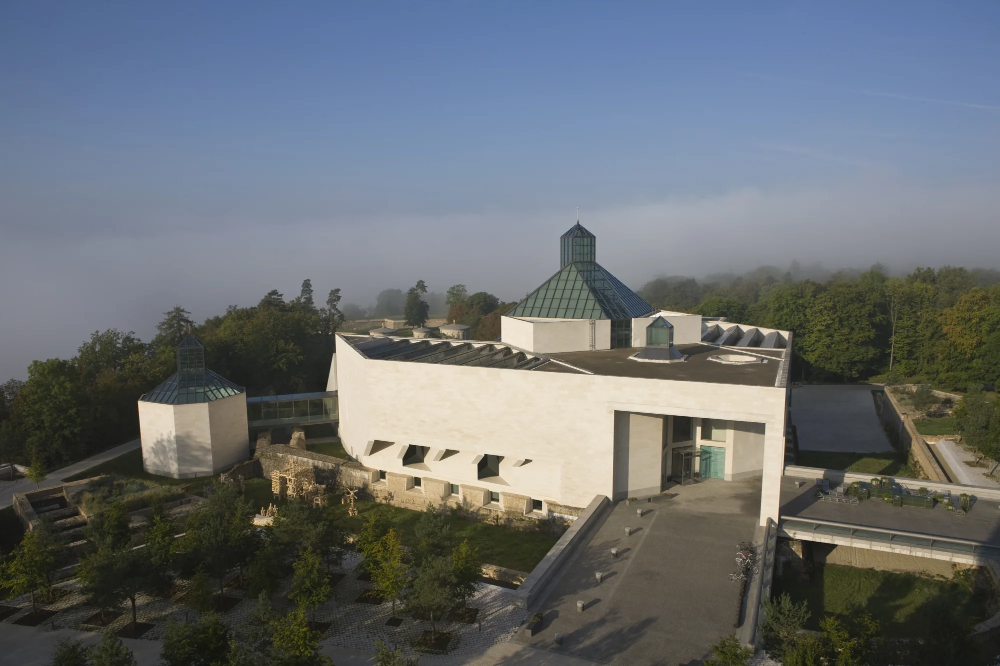
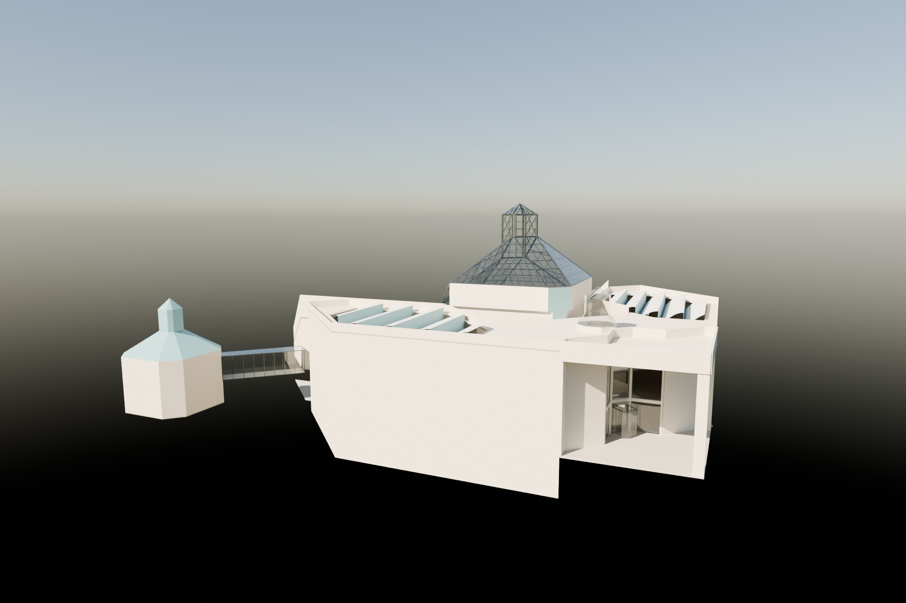
Cam salonlar / fotoğraf 087
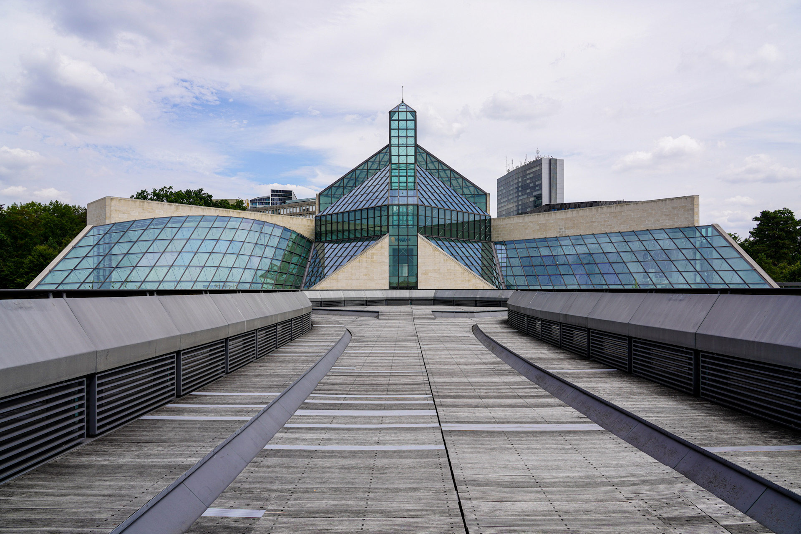
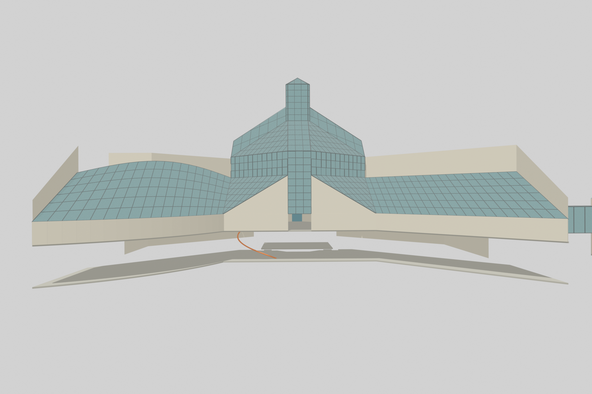
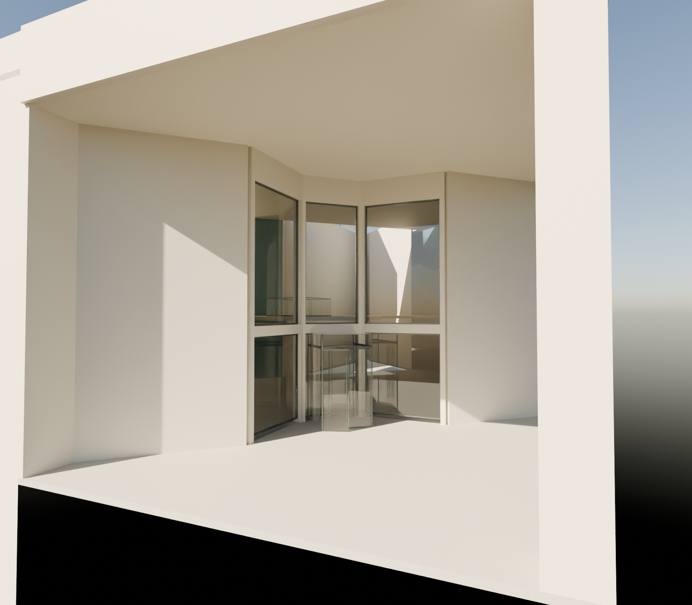
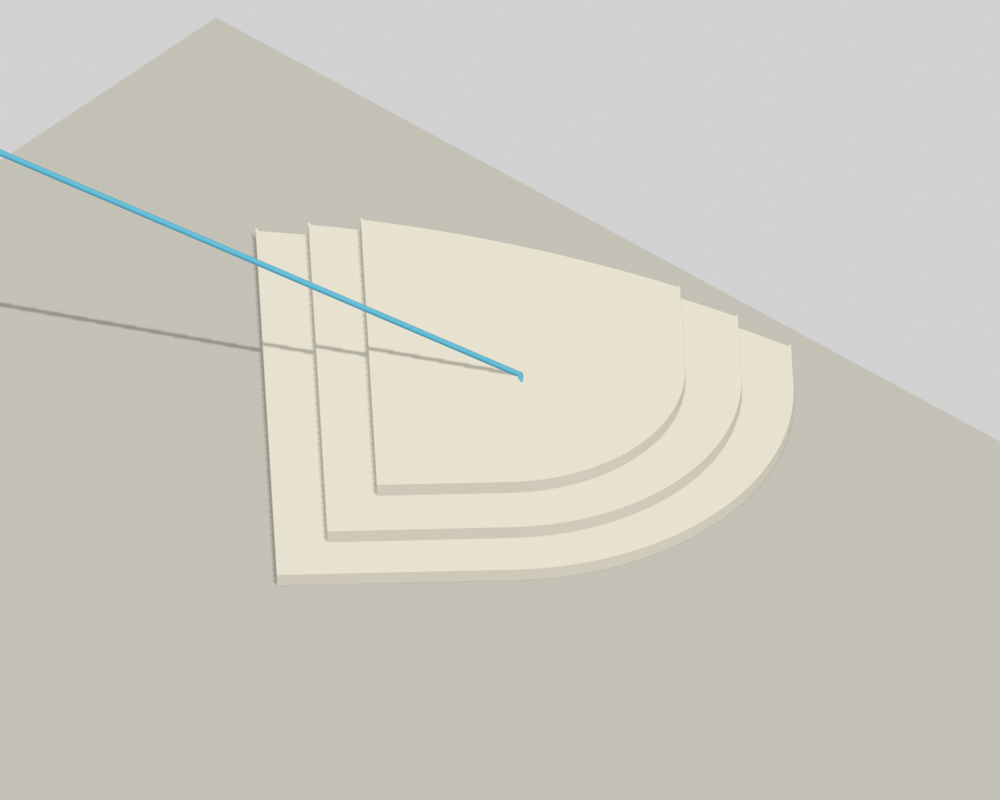
Cam örtü üretimi / P10–P11
Ana çatıda 359; yan ve alt örtüler ile geçitte 435 ayrı cam panel. Ayrı yüzey profilleri, doğuda temsilî gergi katmanı ve geçitte üst çaprazlar. Yan salonların alt kuşağı 093/034 kontrolüyle taş olarak düzeltildi.
3.203 kapalı hacim ve 380 çubuk ucu denetlendi. Batıdaki eğrisel camlarda yaklaşık 20 mm düzlemsellik sapması açık sorun olarak tutuluyor.
Çatı üretim raporu · Yeniden açma kontrolü
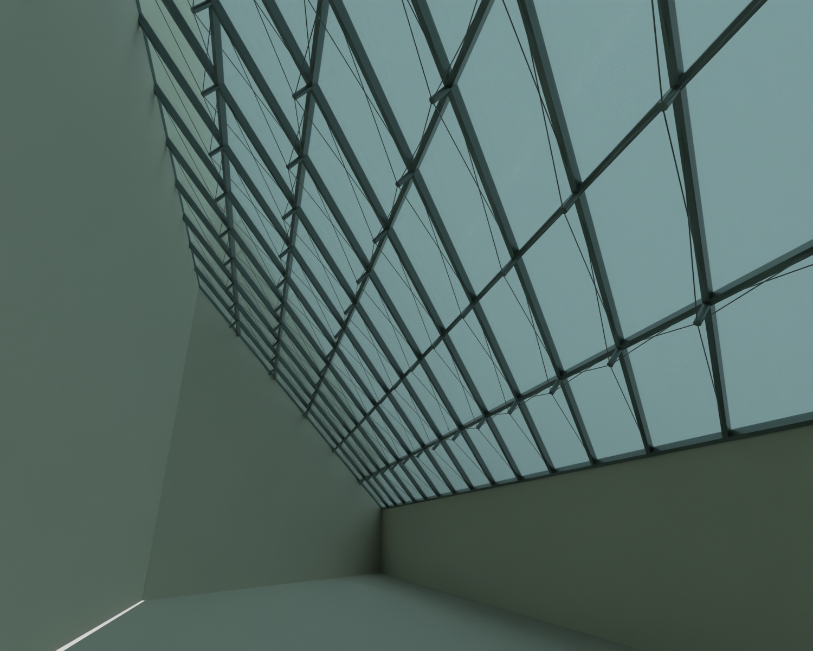
İç geometri kontrolü; fotoğraf eşlenmiş kamera değildir. Gergi ayrıntıları ve ölçüler koşullu.
Giriş yakın detayı / P12 pilotu
013/014 yakın çekimlerindeki iki sıra düz cam kanat, metal kenarlar, çekme kolları, yuvarlak dikmeler ve noktasal bağlantılar ayrı nesneler. Önceki döner kapı tanımı geri çekildi; dört pivotlu kanat yalnız düzenlenebilir mekanizma adayıdır.
008/013 kontrolüyle cam giriş kutusu üst kotu ana alt pencere başlığına yaklaştırıldı. 4,10 m kutu / 3,60 m kanat başlığı çalışma ölçüsüdür.
Grand Hall geçidi / R02 yerel kontrol
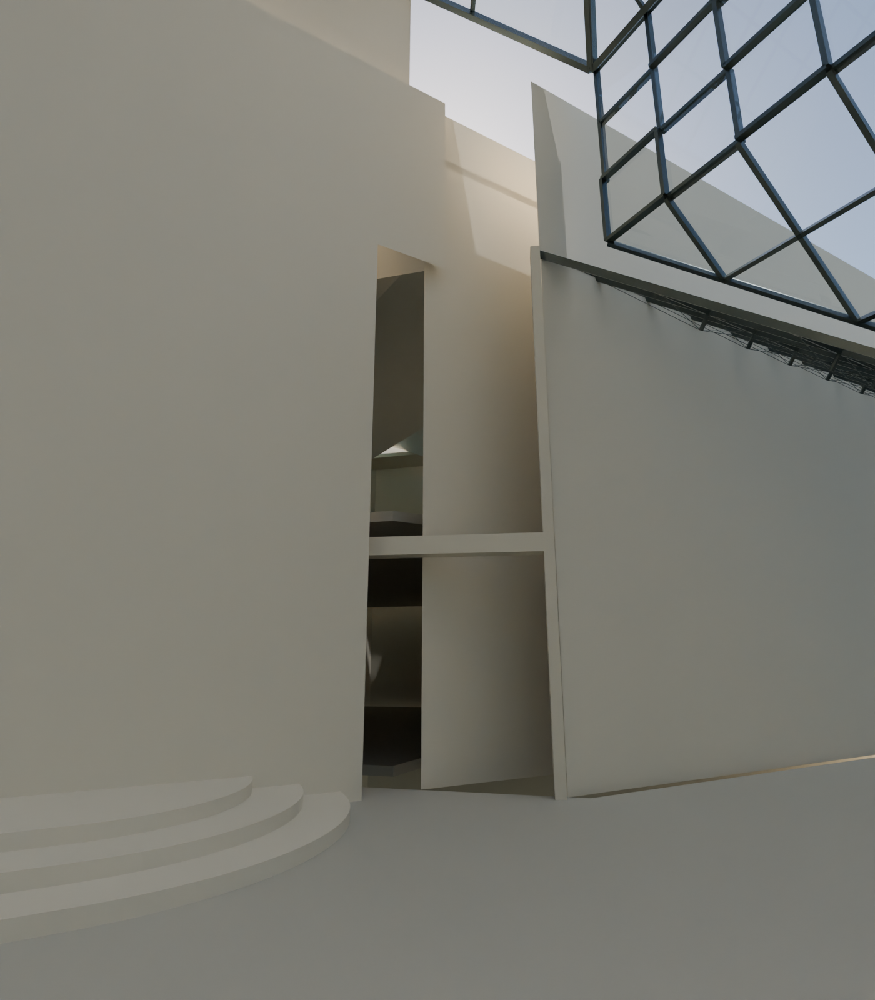
021/026/032, alt ve üst bölümü açık bir geçit gösteriyor. Eski tam yükseklikli cam kaldırıldı; geçide taşan kaba duvar parçaları yerel düzeltildi. 15 ışın testi bütün görünür meshleri kapsıyor. Çatı birleşimi, karşı oda ve merdiven oyuğu hâlâ açık; bu görüntü fotoğraf eşlenmiş kamera değildir.
Kaynak, başarısız denemeler ve kontrol sınırlarıÜst merdiven ayağı / R03 detay çalışması
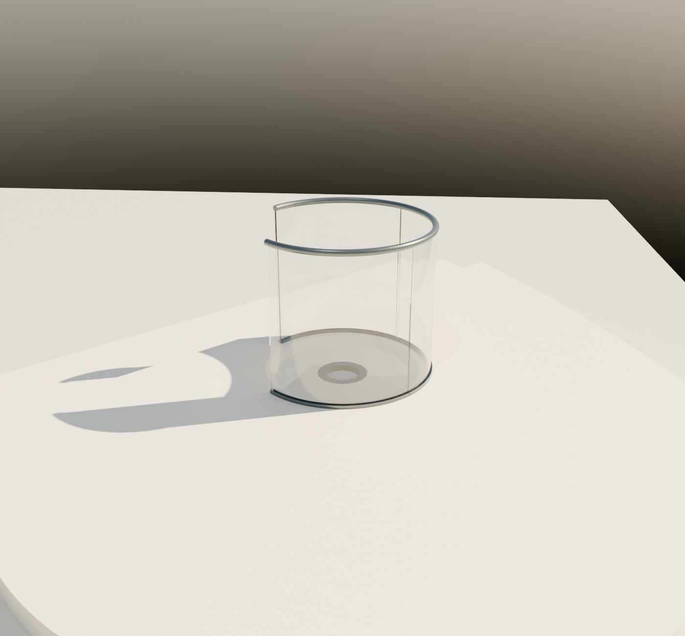
022/023 fotoğraflarındaki kıvrımlı cam, yuvarlak küpeşte, taban kanalı ve gömme zemin armatürü modellendi. Görüntü yalnız bileşeni gösterir; tam merdiven ve eğimli korkuluk devamı henüz yoktur. Daire biçimi, konum, üç panel ve bütün detay ölçüleri koşullu adaylardır.
Üç basamak sınırındaki küçük kendini kesen kapanışlar düzeltildi. 20 kapalı hacim, 65 basamak desteği örneği, 12 gömme zemin ışını ve önceki geçidin 15 ışını yeniden kontrol edildi.
Kaynaklar, varsayımlar ve kontrol raporu · Plan üzerinde koşullu yerleşim · Yeniden açılmış sahnede basamak ilişkisi · 023 kaynak fotoğrafı


Üst merdiven tam kol adayı / R04
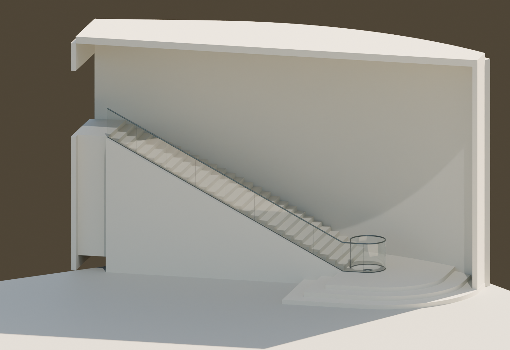
Üç başlangıç basamağından +1 kotuna çıkan 28 ana rıhtlı aday, taş yan yüzey, büyük merdiven oyuğu ve eğimli cam korkuluk üretildi. Rıht sayısı ölçülmüş değildir. Üst uçta planın örtülme/sadeleştirme yorumu henüz doğrulanmadı; turuncu plan bölgesi çıkarımdır.
84 basamak desteği ve baş mesafesi örneği, 27 basamaklar arası geçiş, üst çıkış ve önceki açıklık/girinti kontrolleri geçti. Bu bir bileşen görünümüdür; bütün iç mekânın mimari kabulü değildir.
Kaynak, aday seçimi ve kontrol raporu · İzlenen / çıkarılan geometri · 025 kaynak fotoğrafı


Aşağı merdiven / R05
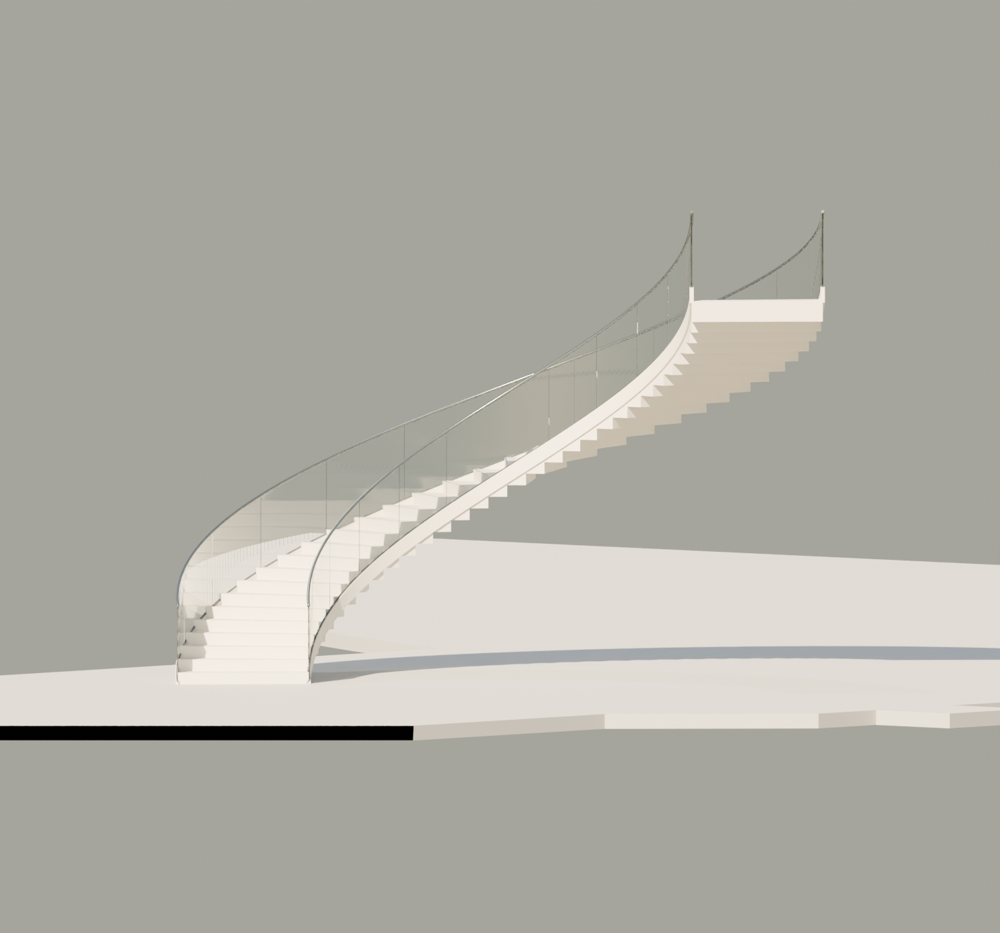
049/050/051/052 kaynaklarıyla ayrı aşağı merdiven kuruldu. 114/055 ile ortadaki kıvrımlı döşeme uzantısı korundu, 102 ile arka köşe boşluğu açıldı; kademeli alt yüz, iki cam korkuluk ve yuvarlak küpeşteler üretildi. 34 rıht çalışma adayıdır; gerçek sayı, malzeme ve kesit ölçüleri kesinleşmedi.
99 basamak desteği/baş mesafesi, 32 geçiş ve iki kata bağlantı kontrolleri geçti. Üst merdiven ve önceki açıklıklar R05 içinde tekrar denetlendi.
Zemin boşluğu ilişkisi · Kaynak eğrisi ve model · Varsayımlar ve kontrol raporu


Alt fuaye tavanı ve kıvrımlı boşluk kenarı / R06
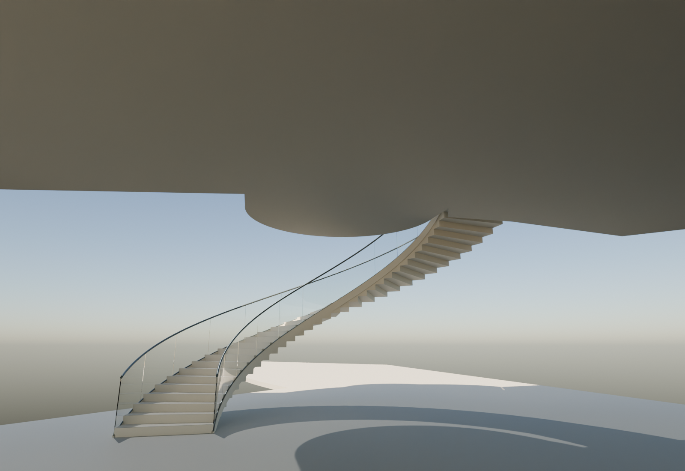
055 fotoğrafındaki kıvrımlı döşeme kenarı ve geniş tavan yüzeyi, 104 alt kat sınırıyla birlikte kuruldu. Yayımlanan 4,67 m fuaye temiz yüksekliği, koşullu alt kat kotuna uygulandı; katlar arası ölçü olarak kullanılmadı. Tavan dış konturu alt kat ve zemin planlarının ortak alanıyla sınırlandı.
Tavan altı örnekleri ve her iki merdivenin dolaşım kontrolleri yeni sahnede tekrar çalıştırıldı. Görünüm bileşen incelemesidir; çevre duvarları ve aydınlatma detayları bu pakette tamamlanmadı.
Kaynak ve kontrol raporuMerdiven boşluğunun taş duvarları / R07
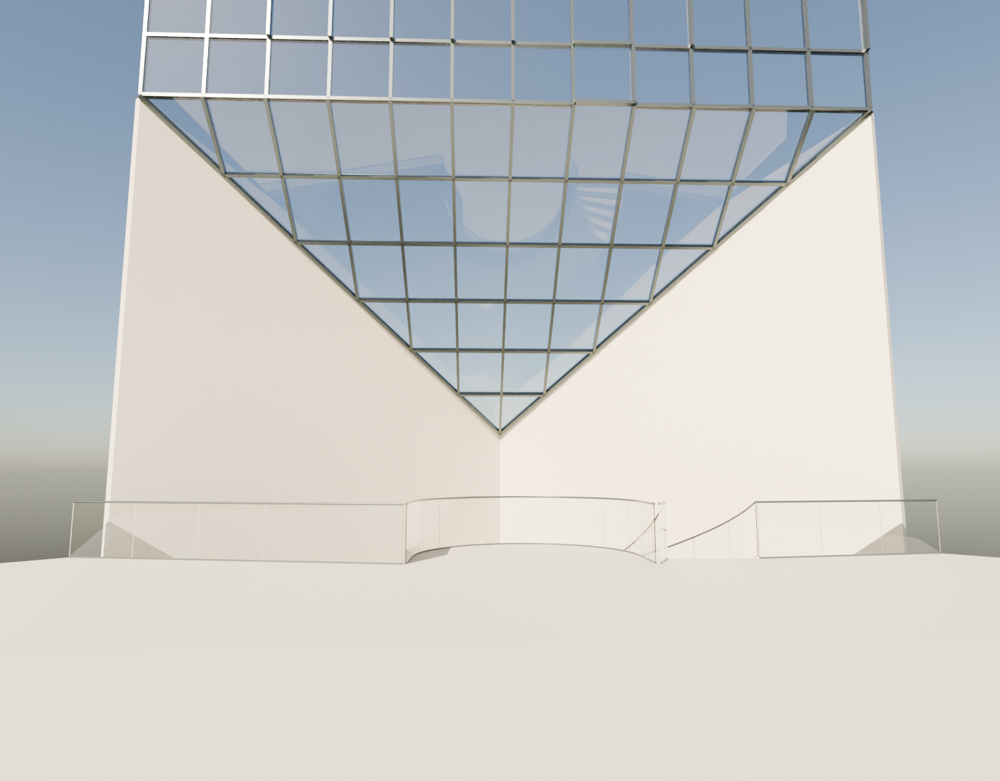
114/045 ve 051/055, merdiven arkasında iki düz taş yüzey gösteriyor. Duvarlar plan köşesine ve mevcut koşullu üçgen çatı kenarına bağlandı; köşe birleşimi kapalı. Taş deseni, kesin kalınlık ve fotoğraf kamerası henüz kalibre edilmedi.
30 duvar yaklaşma ışını, köşe birleşimi ve önceki tavan/merdiven kontrolleri yeniden geçti. 20 cm içeri alınan 10 alt döşeme örneği destekli; duvar dibinin tamamı için ölçü kabulü yok.
Alt kattan bileşen görünümü · Kaynak ve belirsizlik raporuEğimli taş tavan ve 24 kollu aydınlatma / R08
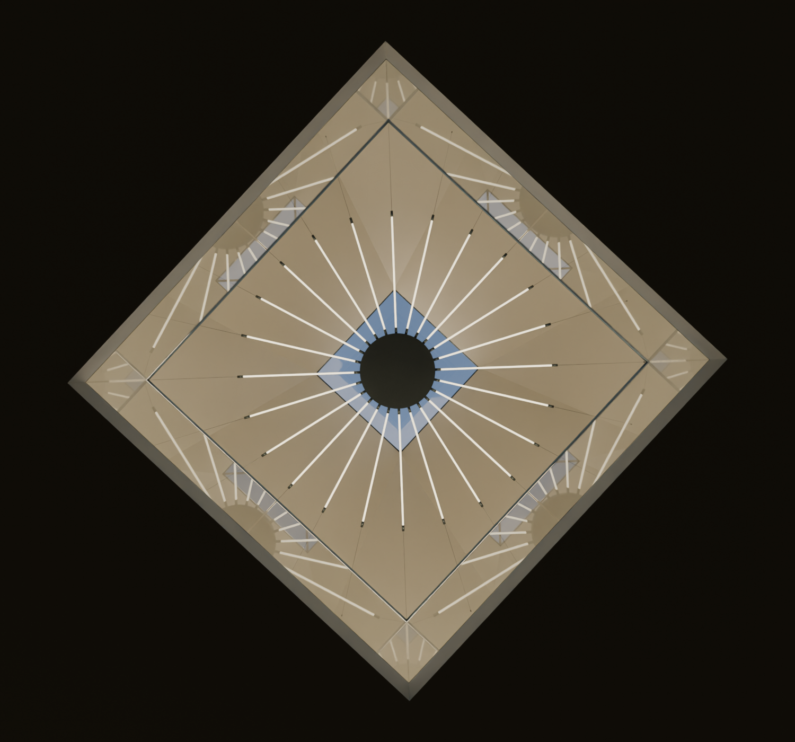
016 fotoğrafındaki 24 radyal kol ayrı üretildi. 015/016 ile taş tavanın kare ışıklığa yükselen biçimi eklendi; çatı döşemesi eğimli boşluğa göre açıldı. Tavan kotu, armatür çapı/yüksekliği, profil ve tel ölçüleri değiştirilebilir varsayımlardır.
141 kapalı hacim, sekiz düzlemsel tavan yüzeyi, 12 açık günışığı ışını, 16 üst kat geçiş örneği ve 24 tavan bağlantısı kontrol edildi. Önceki geometride yalnız iki çatı kesicisi değişti; diğer nesneler birebir korundu.
016 üzerinde kol sayımı · Eğik inceleme görünümü · Kaynak ve varsayımlarÜst kat okuma mekânı ve üç geçiş / R09
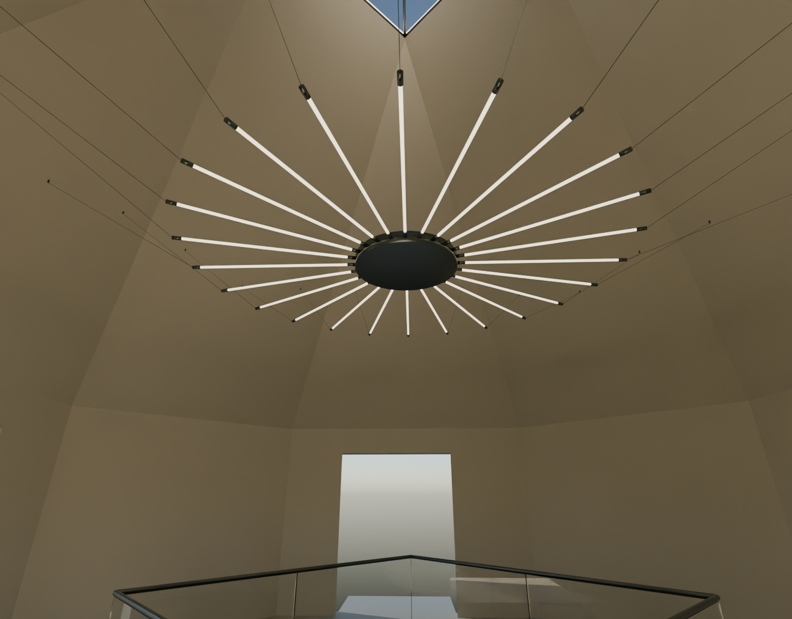
PDF’deki oda iç çevresi ve üç giriş boşluğu işlendi. Kısa döşeme bağlantıları önceki ayrı kat parçalarını birleştiriyor; tavan alt sınırı duvar üstüne oturuyor. Plan çizgisine en büyük uyum artığı 0,809 piksel; bu ölçüm hassasiyeti değildir. Kapı kanatları fotoğraf–plan kimliği çözülmeden yerleştirilmedi.
Üç açıklıkta dokuz geçiş ışını, 27 döşeme desteği/baş mesafesi ve sekiz tavan-duvar köşesi kontrol edildi. Tavan ve ışıklık testleri tekrar geçti.
PDF oda ve geçiş ayrıntısı · Kaynak ve kontrol raporuDoğu spiral merdiven / R10
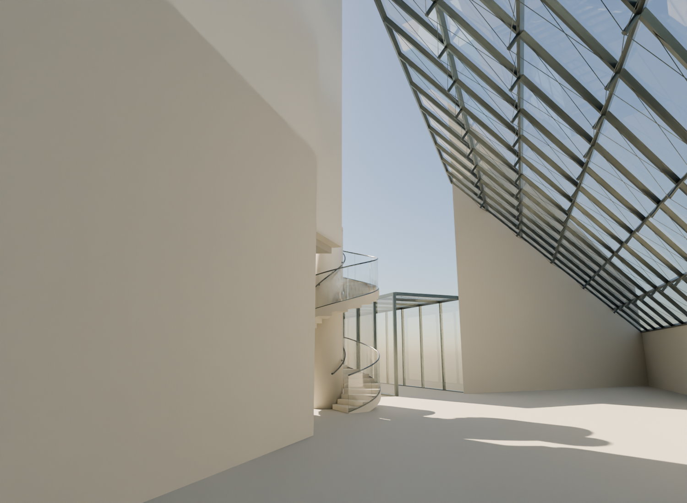
041–044, resmi 102/103 ve PDF daire sembolüyle ayrı spiral üretildi. 34 rıht ve 540 derece dönüş koşullu adaydır. Üst sahanlık döşemeye birleştirildi; bahçe alanını yanlış bölen eski çatı izdüşümü duvarları kaldırıldı.
106 kapalı hacim, 99 basamak desteği/baş mesafesi, 32 geçiş, 12 üst sahanlık örneği ve üç bahçe görüş ışını geçti. Uç cam cephe ve çatı birleşimi bu görüntüde henüz eksik; gökyüzü görünen boşluklar kaynakta açıklık olarak kabul edilmedi.
Bileşen ayrıntısı · Kaynaklar, reddedilen denemeler ve açık konularDoğu uç cam cephe / R11
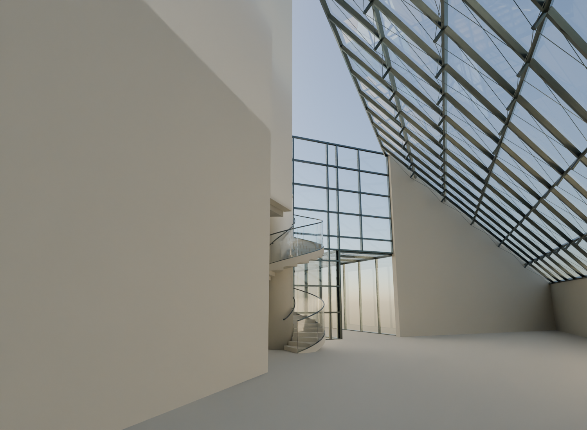
034/041 yüksek cam pencereyi destekliyor. Eski taş alın duvarının kenar kotları daha önce revize edilmiş eğimli cam çatıya bağlandı. Dokuz pavyon geçiş örneği ve spiral kontrolleri geçti.
Cam modülleri ve başlık kotu adaydır. Görselde pencere üstündeki çatı şeridi hâlâ eksik; açık gökyüzü kaynak tasarımının parçası değildir.
Kaynak, sınırlar ve kontrollerBatı çatısında düz camlar / R12
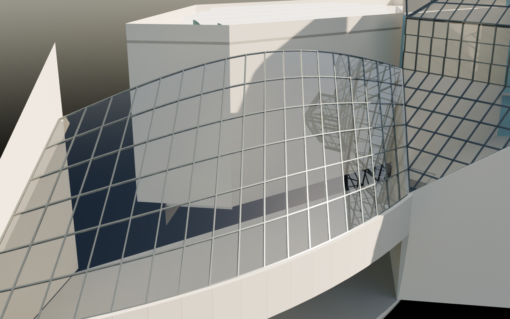
093 ile mevcut panel ağı tekrar incelendi. 108 panelin bükülmüş dörtgen yüzeyi düzleştirildi; en büyük köşe hareketi 5,102 mm. Yeniden açılmış sahnede düzlem artığı 0,002 mm altında. Çerçeveler korundu; bu sayı imalat veya rölöve hassasiyeti değildir.
Panel sayısı, genel çatı biçimi, profil yuvası ve montaj toleransı hâlâ koşullu.
Geometri düzeltmesi ve sınırlarıPavyonun dört yüzlü cam kulesi / R13
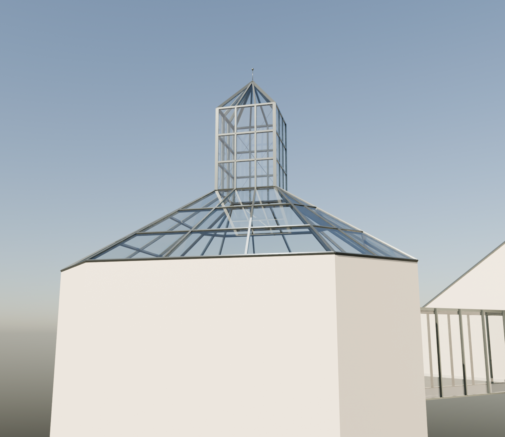
089 yakın çekimi önceki sekizgen kule taslağını desteklemiyor. Dört yüzlü kule, görünen yüzlerde 3×3 cam düzeni, sekiz alt çatı yüzeyi ve tepe detayı üretildi. 108 cam ile 334 kapalı hacim denetlendi.
Görünmeyen yüzler simetri adayı; kesit oranından gelen yükseklikler, profil/finial ölçüleri ve çatı modülleri kesin değil. Pavyon iç döşemesi ve ayrı alt merdiveni hâlâ açık.
İçten çatı görünümü · Kaynak ve kontrollerİki kollu batı cam merdiven / R14
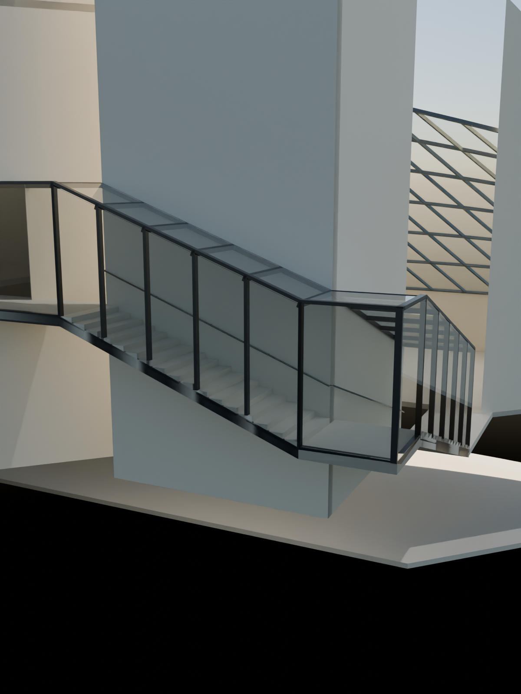
066’daki 17 görünür rıht işaretlendi; 102/103 iki kollu yerleşimi destekliyor. 17+17 rıhtlı aday, köşe sahanlığı, üst galeri geçişi, duvar küpeşteleri, eğimli cam örtü ve koyu kenar bantları üretildi. Diğer kolun sayısı ve eşit kot bölüşümü varsayım.
151 kapalı hacim, 102 basamak desteği/baş mesafesi, 11 bağlantı noktası ve 36 geçiş ışını kontrolü geçti. Cam modülleri, profil ve kotlar ölçülmüş proje verisi değil.
066 karşılaştırma görünümü · Fotoğraftaki rıht sayımı · Kaynak ve kontrollerDış çatı profillerinin malzemesi / R16
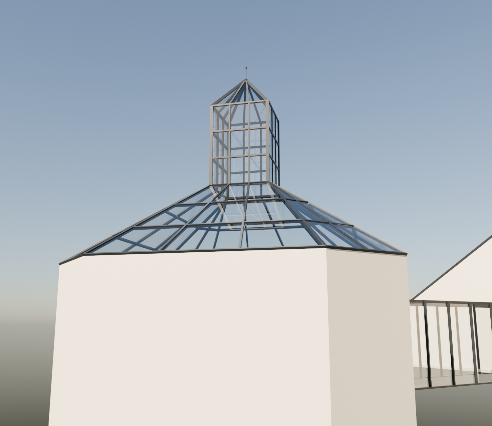
089/090/092/093/094/097/099 ile 2222 dış profilin görünümü iç metal çubuklardan ayrıldı. 5108 nesnenin geometrisi, konumu ve görünürlüğü değişmedi. Renk, pürüzlülük ve ışık fotoğrafla kalibre edilmiş ölçü değildir.
R15 cephe denemeleri görsel kontrolde reddedildi; ana modele alınmadı.
Kaynak ve kontrol raporu · Cephe araştırmasının açık konusuPavyon iç mekânı / R17
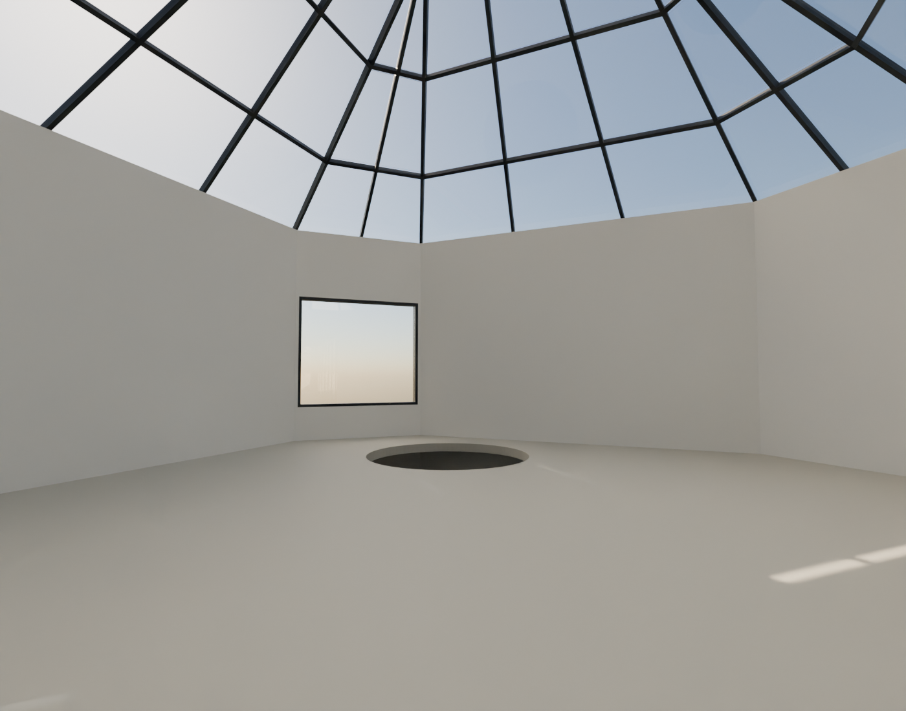
102/104 ve 101 kesitiyle zemin ve dairesel rezerv eklendi. Yeni resmî PA0119 fotoğrafı, merdiven arkasındaki pencereyi ve beyaz duvarı destekliyor. 19 kapalı hacim, geçit/pencere ışınları ve döşeme desteği denetlendi.
Görünen dairesel boşluğun basamakları ve taş parapeti henüz eksik. Pencere eşleştirmesi ve boyutlar koşullu; sergi döşemesi kalıcı mimari sayılmadı.
Kaynak, ölçü sınırları ve kontrollerPavyon geçit kapıları ve iç profiller / R18
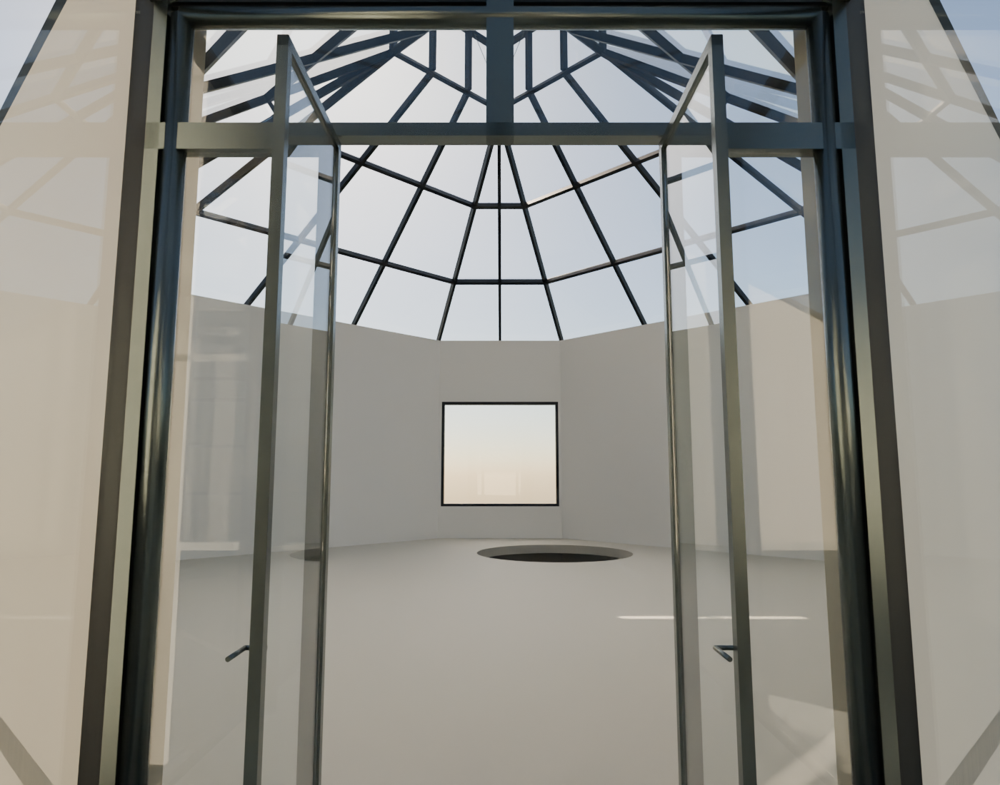
067 yakın çekimiyle iki açık cam kapı, yan sabit camlar ve bölünmüş üst camlık kuruldu. 068 ile yuvarlak iç taşıyıcı görünümü eklendi. 61 kapalı hacim, 12 geçiş ışını, önceki döşeme/pencere kontrolleri geçti.
Ölçüler ve sekiz geçit modülü koşullu. Pavyon merdiveni ve taş parapeti hâlâ eksik; kapı donanımları imalat ayrıntısı değildir.
Geçitten görünüm · Kaynak ve kontrol raporuOditoryum: oda, kademeler ve koltuklar / R19–R20
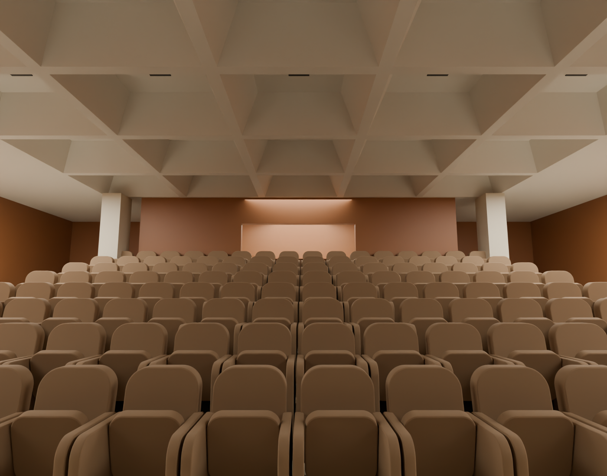
104 planı, 101 kesiti, 071–076 ve iki yeni LCB fotoğrafıyla sahne, iki yan geçiş, taş kademeler, arkadaki camlı kontrol kabini ve kaset tavan kuruldu. Sekiz sıra ve arka sırada 16 koltuk fotoğraftan destekleniyor; 8×16 düzen çalışma adayıdır.
896 koltuk bileşeni, 128 destek/baş mesafesi ve 50 geçiş örneği kontrol edildi. Kesin ölçüler ve kapalı kalan koltuklar belirsiz; ahşap paneller/delikler, donanım ve ışık ayrıntıları henüz tamamlanmadı.
Koltuk bileşenleri · LCB kaynak fotoğrafı · Kaynak ve kontrol raporuAhşap panel ve kare delikler / R21
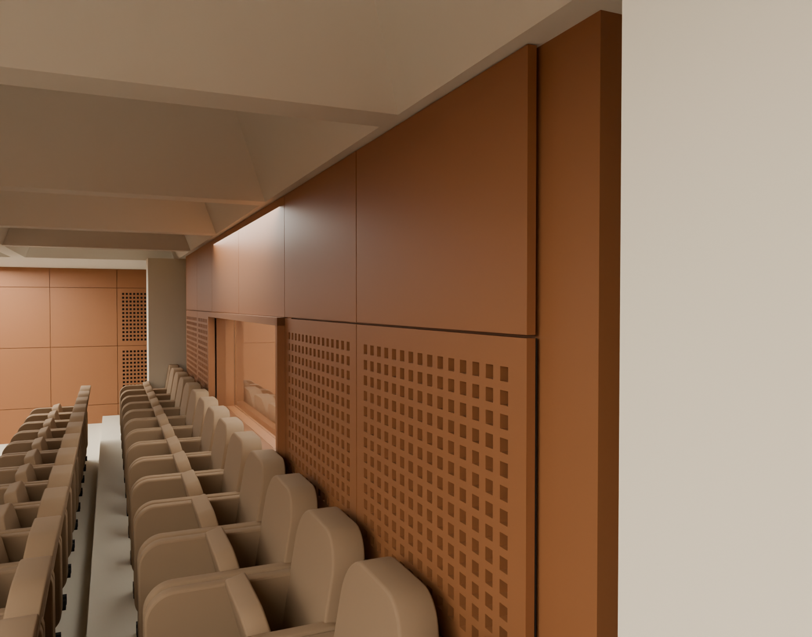
076 yakın çekiminde bir panelde 15 sütun × 13 sıra delik sayıldı. 246 kapalı bileşen üretildi; delik yüzleri geometri olarak açık, arka koyu yüz yalnız görünüm adayıdır. Koltuk ve geçiş testleri yeniden geçti.
Bütün odadaki panel tekrarları ve derz ölçüleri koşullu. Gizli akustik sistem veya ahşap türü belirlenmedi.
Kaynak ve kontrol raporu · 076 delik sayımı kırpımıOditoryum kapıları, ekran ve gömme ışıklar / R22
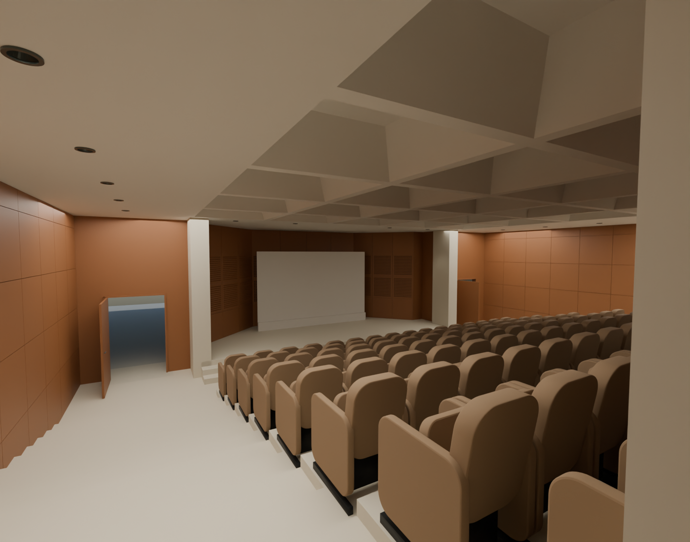
071/073/074/076 ile iki açık ahşap kapı, boş projeksiyon yüzeyi ve 16 küçük gömme armatür adayı eklendi. Yuvalar tavan geometrisine işlendi; 16 yuva açıklığı, kapı geçişleri, koltuk destekleri ve önceki panel delikleri yeniden denetlendi.
Armatür adedi/yerleşimi, ışık gücü, ekran ve kapı detayları kesin proje verisi değildir. Tam müze çalışması sürüyor.
Kaynak ve kontroller · Kapı ve tavan ayrıntısıÜst galeriler: geçişler ve cam ışıklıklar / R23–R24
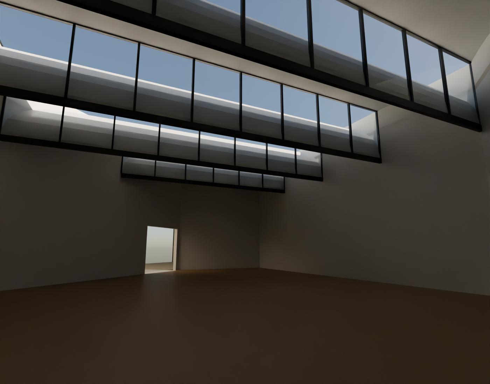
103/PDF2016 ile iki altıgen galeri ve dört geçiş kuruldu; batı merdiveninin üst rotası plandaki kapıya döndürüldü. UC01/UC02 ve UG02/UG03 ile eski opak ışıklıklar cam ve kapalı kabuk adaylarına dönüştürüldü. 184 kapalı çatı bileşeni, cam açıklıkları ve galeri dolaşımı denetlendi.
Doğu altı/batı dört kabuk tekrarı, profil ve bütün detay ölçüleri koşullu. Işık/pozlama kalibrasyonu ve oda donanımları açık; tam bina kabulü yok.
Batı galeri · Kaynaklar ve açık konularPavyonun taş parapeti ve temsilî merdiveni / R25
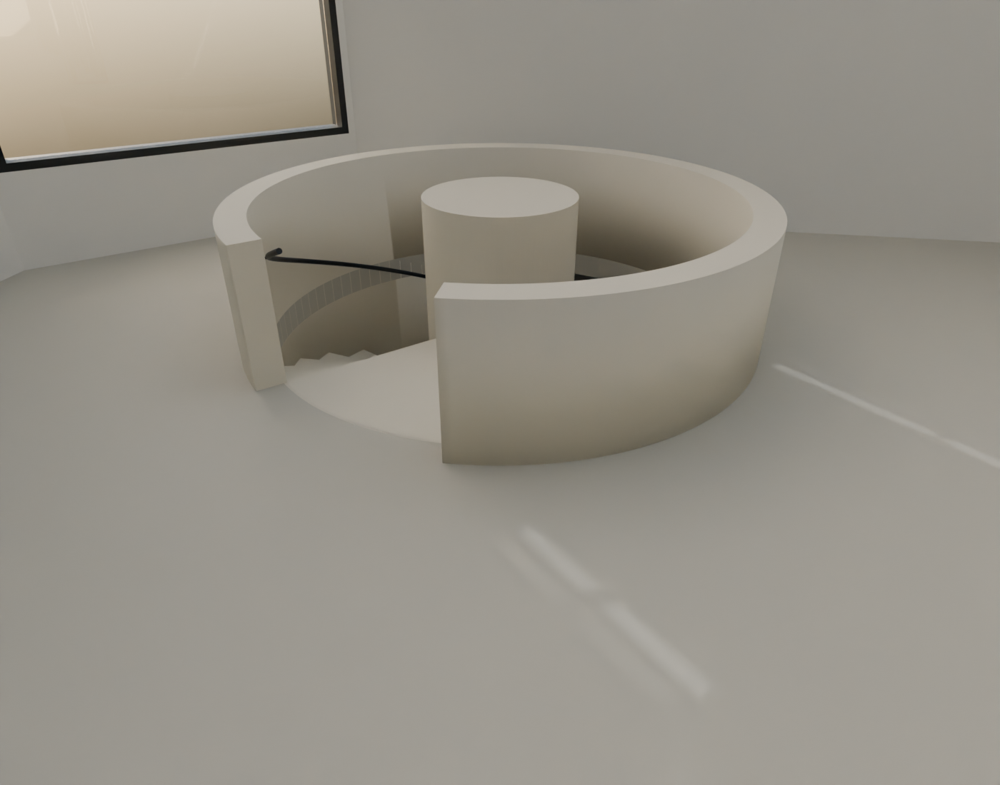
102/104, 101 ve resmî PA0119 fotoğrafı ile taş parapet, alt döşeme ve düzenlenebilir merdiven adayı üretildi. 38 kapalı nesne, 72 basamak örneği ve üst/alt geçişler denetlendi.
24 rıht, 360 derece dönüş, yön, iç çekirdek ve giriş konumları kesin kaynak bilgisi değildir. Bu bölüm temsilîdir; yeni kanıtla revizyona açık.
Kaynak ve belirsizlikler · Oda görünümüDoğu cam çatı bağlantısı / R26
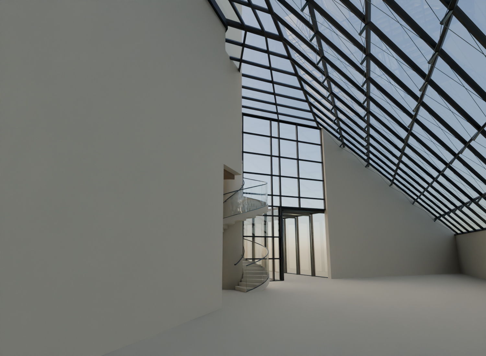
033/034 ile eğimli çatı–galeri duvarı arasındaki eksik cam şerit eklendi. 63 cam dahil 234 kapalı hacim ve doğu spiralinin dolaşımı yeniden denetlendi.
Yatay şerit eğimi, modül sayısı, profil ve birleşim ölçüleri koşullu; drenaj ve mesnet ayrıntıları açık.
Kaynak ve kontrol raporuGaleri cephesinin eğimli nişleri / R27
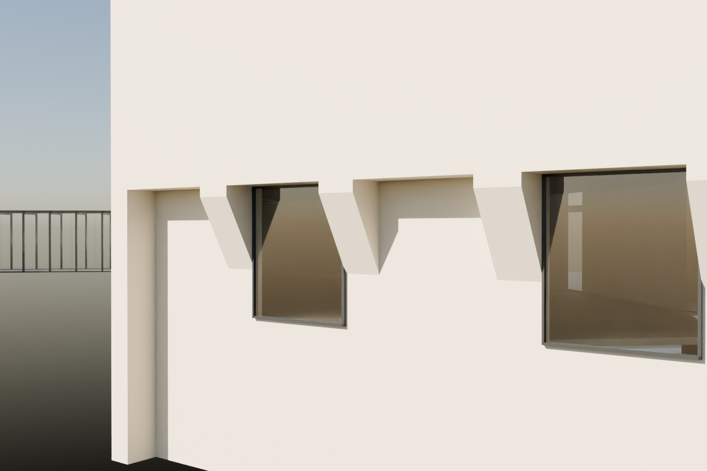
003/004/005/116 dış görselleriyle beş niş, iki cam açıklık ve tam genişlikte eğimli ara ayaklar işlendi. 30 kapalı parça ve 18 açıklık ışını kontrol edildi.
Yerleşim ve ölçüler koşullu. 061/062 iç fotoğraflarının bu cepheyle kesin eşlemesi yok; çevre odalar ve alt kat cephe açıklıkları tamamlanmadı.
Kaynak ve kontrol raporuZemin galerilerinin açık girişleri / R28
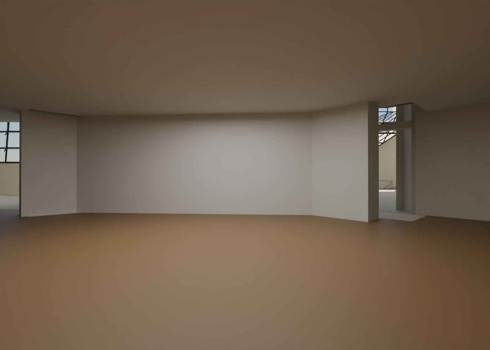
102 ve PDF2016 ile bağımsız giriş duvarları, dolaşım şeritleri, ahşap zemin ve düz tavan adayları üretildi. 36 geçiş ışını ve 72 destek/baş mesafesi örneği geçti.
Tavan kotu ve yapı kalınlıkları koşullu. Galeri dış çevresi, cephe bağlantıları ve tesisat tamamlanmadı; renderdaki yardımcı ışıklar mimari armatür değildir.
Kaynak ve kontrol raporuAlt galerilerin sınırları / R29
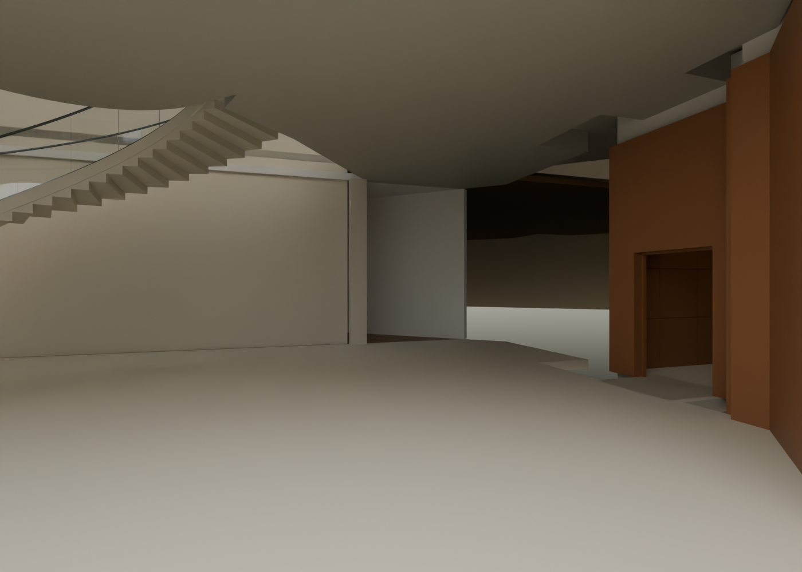
104 ile iki alt galeri, ayrı fuaye döşemesi ve iki açık bağlantı kuruldu. 44 kapalı hacim, galeri geçişleri ve alt merdiven desteği denetlendi.
Alt galeri tavan yüksekliği ve bitişleri temsilî; konumu doğrulanmış iç fotoğraf yok. Tesisat, sergi ve teknik alanlar açık.
Kaynak ve kontrol raporuÜst asansör kapısı ve sahanlık / R30
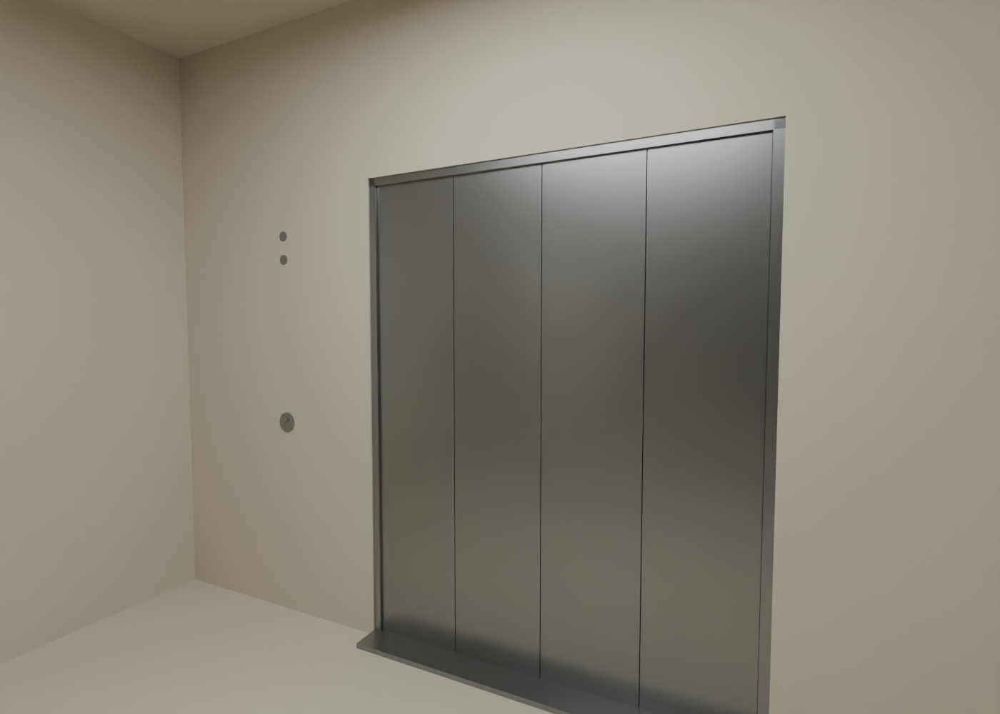
Üst PDF söve aralığına dört panelli metal kapı ailesi ve taş sahanlık adayı eklendi. 20 kapalı hacim, yaklaşım ve destek kontrolleri geçti.
077 fotoğrafının katı bilinmiyor; kapı ailesi aktarımı ve bütün detay ölçüleri koşullu. Alt/zemin kat kapısı ve kesintisiz şaft geometrisi çözülmedi.
Kaynak ve kontrol raporuStudio ve okuma odası bağlantısı / R31
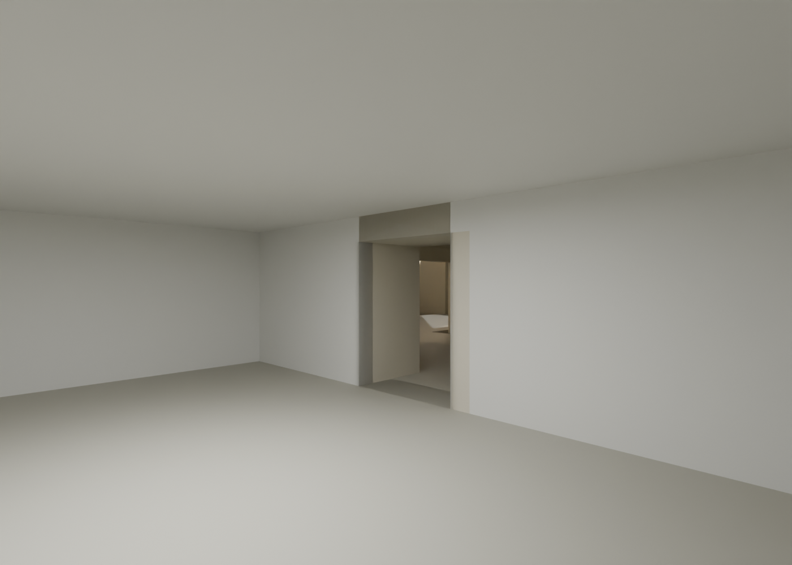
PDF iç sınırlarıyla Studio çevresi ve okuma odasına açılan yan geçit eklendi. 10 kapalı hacim, 9 geçiş ve 18 destek örneği kontrol edildi.
Studio iç fotoğrafı konumlandırılmadı; tavan, yüzey bitişleri ve ışık temsilî. Sabit donanım ve gerçek ayrıntılar açık.
Kaynak ve kontrol raporuTaş derzi ve ahşap yüzey adayları / R32
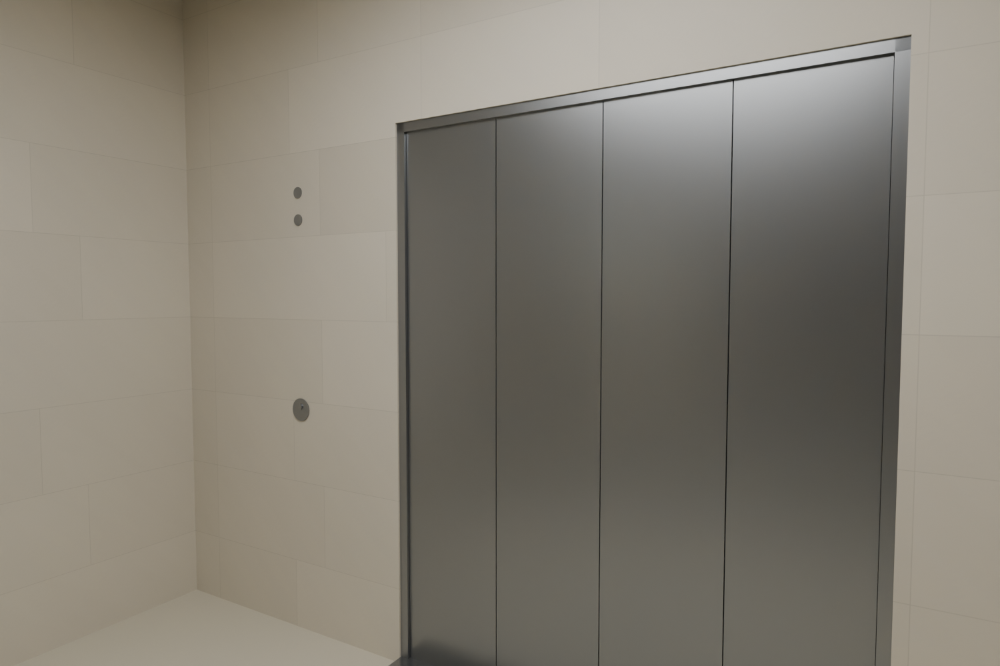
75 nesnede 248 yüz için UV ve dört paketli doku üretildi. 7139 nesnenin geometrisi değişmedi; iç cephede 20 yüz beyaz bitişe ayrıldı.
Modül, renk ve döşeme yönü koşullu. Galeri pencerelerinin plan sınırıyla çelişkisi açık; R32 iç cephe renderı oda kabulü değildir.
Kaynak ve kontrol raporuGiriş, vestiyer ve servis sınırları / R33
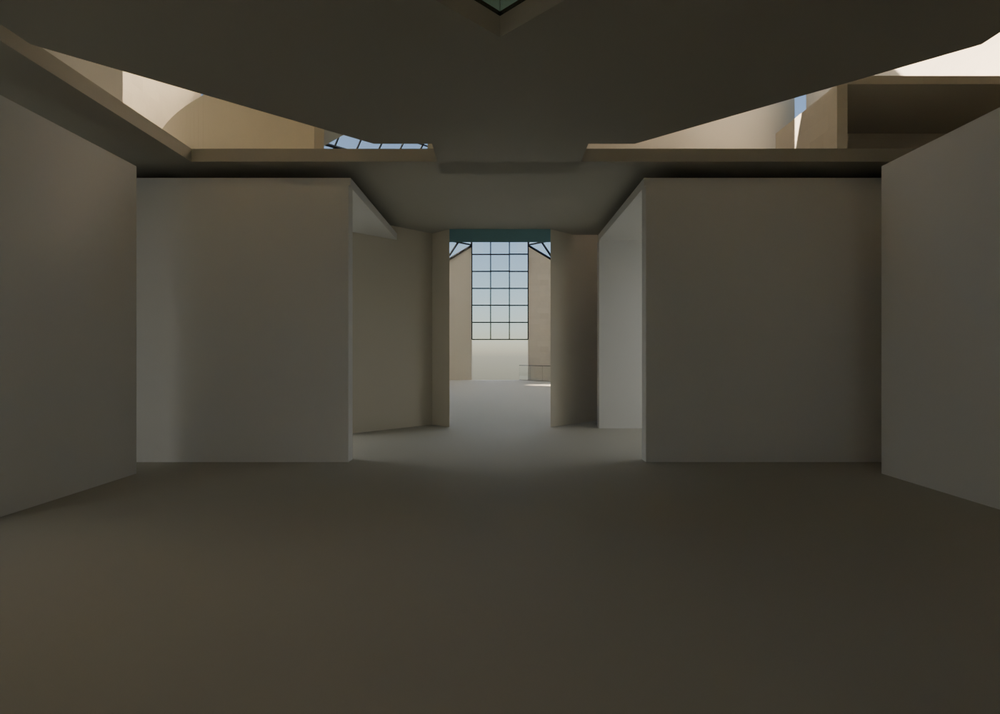
27 kapalı hacim ve altı dolaşım rotası kuruldu. Eski kaba yüzeyin kapattığı ana geçit açıldı; 18 ışın ve 78 destek/baş mesafesi örneği geçti.
Tavan/kalınlık/bitirişler temsilî, oda donanımı açık. R04 çapraz kontrolünde eski R26 çatı başlığında tek üst açıklık kesişmesi kaydedildi; tam bina kabulü yok.
Kaynak ve kontrol raporuİki giriş köprüsü ve kesintisiz döşeme / R34
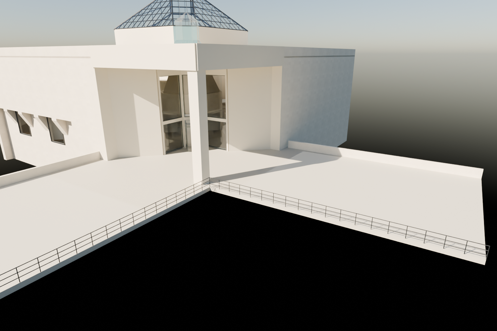
OSM köprüleri mevcut giriş döşemesine bağlandı. 50 kapalı hacim, 122 rota ve 90 ayak izi örneği; eski döşemenin 283 destek örneği doğrulandı.
Kot, kesit ve korkuluk ayrıntıları koşullu. Arazi, mesnet ve tarihî duvar çalışması sürüyor; köprü görünümü tam çevre teslimi değildir.
Kaynak ve kontrol raporuHendek ve tarihî duvarların ilk çevre etüdü / R35
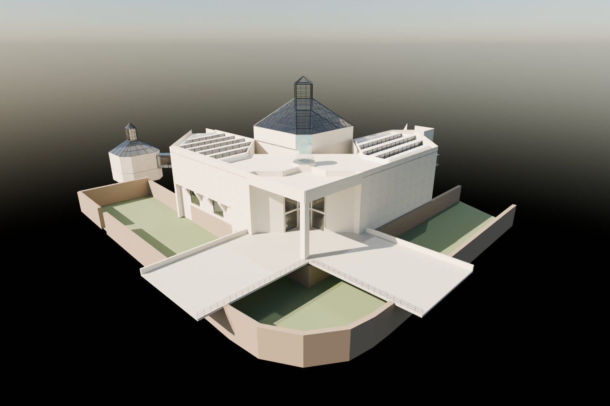
OSM çizgileriyle 20 duvar parçası ve ilk hendek zemini kuruldu. 21 kapalı hacim ve 122 köprü rota örneği denetlendi.
Arazi kotları, duvar kalınlığı ve düz zemin temsilîdir. Moloz taş, tarihî açıklıklar, diğer hendek kolları ve park bitirilmedi.
Kaynak ve kontrol raporuCephe başlığı kaynak kontrolü / R36
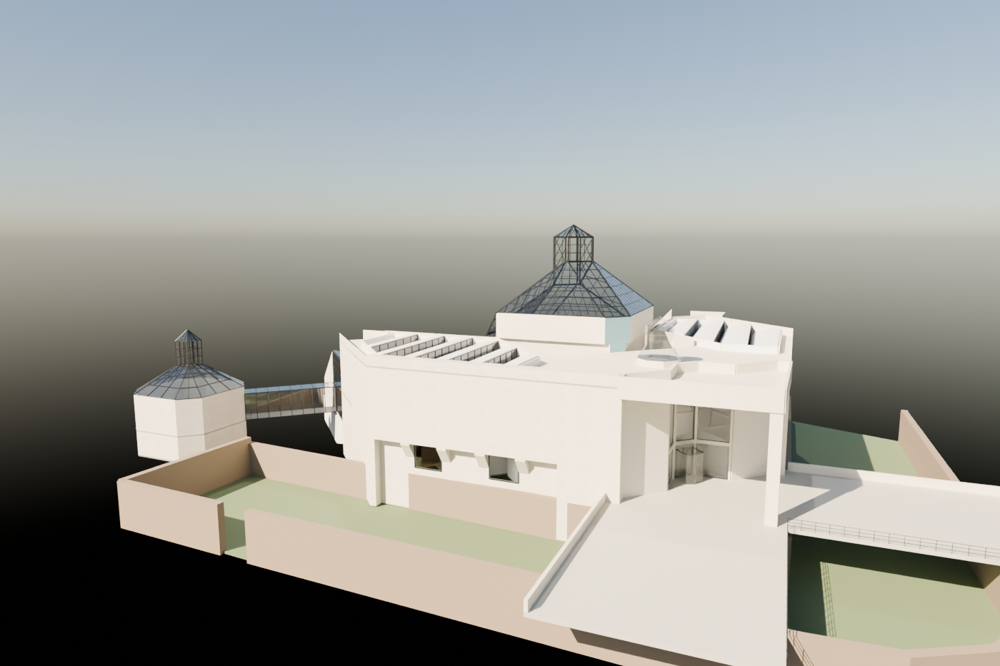
Beş fotoğraf noktasıyla başlık adayı 3,45 m oldu; 30 kapalı hacim ve 18 açıklık ışını denetlendi.
Kot ölçülmüş değildir. Derin cam denemesi vestiyerle çakıştığı için reddedildi; oda ve açıklık derinliği A01 kapsamında açık.
Kaynak ve kontrol raporuÜst geçit başlığı ve net açıklık / R37
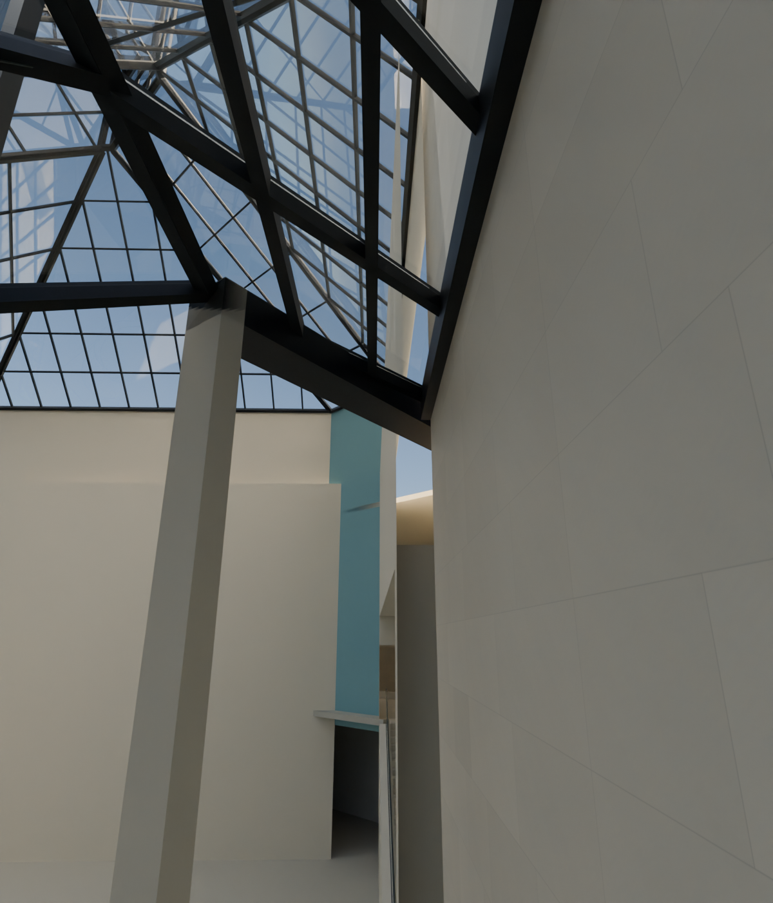
026/033 ile metal başlık eklendi; 27 açıklık/başlık ışını ve R04 merdiven regresyonu geçti.
Başlık kesiti, mutlak kot ve çatı eğimi koşullu. Net açıklık artık başlığın alt yüzünden tanımlanıyor; tam bina kabulü yok.
Kaynak ve kontrol raporuPark bağlantıları ve kayıtlı ağaç konumları / R38
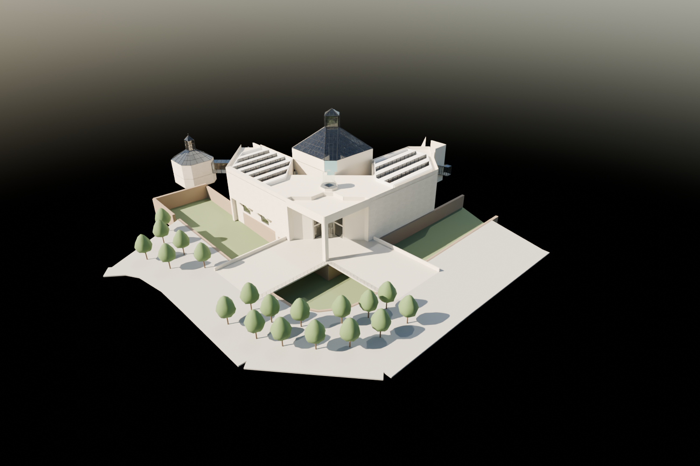
39 kapalı hacim; 19 OSM ağacı ve 204 köprü/park rota örneği denetlendi.
Arazi düz kot adayı; ağaç boyu/taç ve 4 m yol genişliği temsilî. Tam peyzaj teslimi yok.
Kaynak ve kontrol raporuGiriş tavan sürekliliği / R39
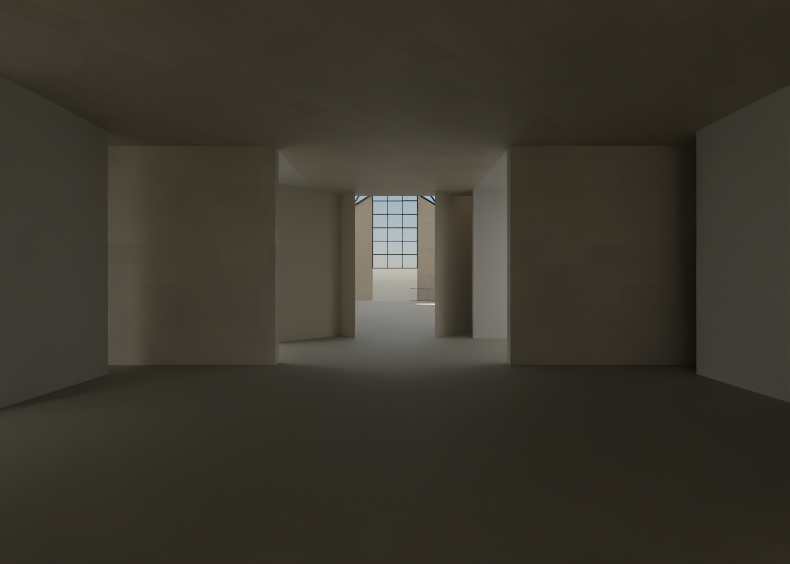
20 tavan hücresi; 230 kapsama, 18 geçit ışını ve 78 dolaşım örneği geçti.
Kot/kalınlık/derz koşullu. Asma tavan tesisatı ve armatür yerleşimi çözülmedi.
Kaynak ve kontrol raporuOrtak mesh verisi / R41
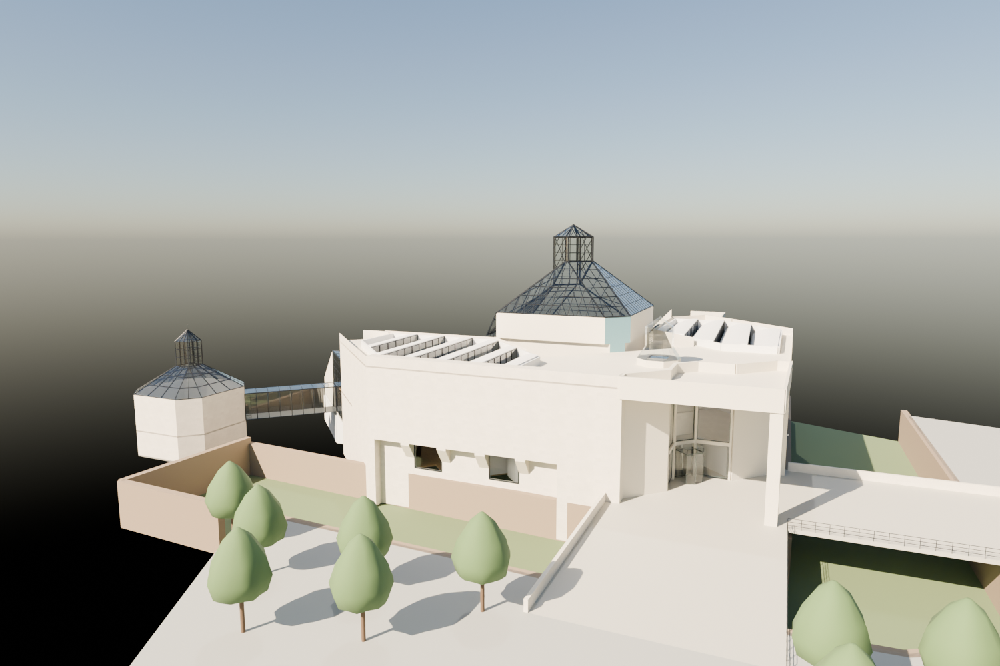
7298 nesne yeniden açılıp karşılaştırıldı. Ayrı mesh verisi6327→3449; nesne kimlikleri ve mimari geometri korundu.
Yalnız veri optimizasyonu; ölçüm doğruluğu artmadı. R40 pencere denemesi reddedildi ve dahil edilmedi.
Kaynak ve kontrol raporuGrand Hall çatı lamelleri / R42
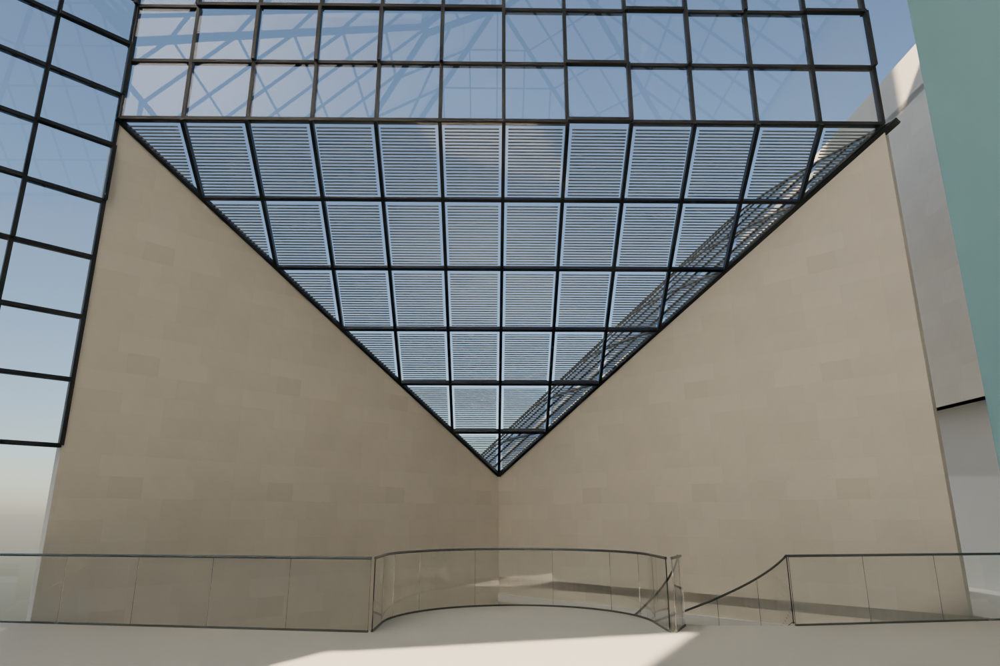
026/049 ile42 cam panel altında902 kapalı lamel hacmi; cam açıklığı ve panel sınırları denetlendi.
Boyut/adım/açı aday. Gizli mekanizma ve045 kesin köşe kimliği açık; bütün çatı kabulü yok.
Kaynak ve kontrol raporuTaş döşeme yüzeyleri / R43
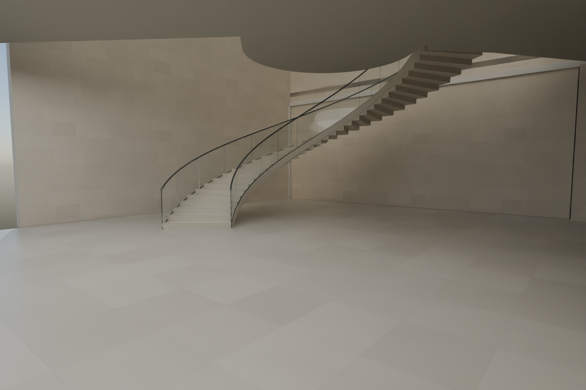
Üç döşemede ince derzli yüzey adayı;7340 nesnenin değerlendirilmiş geometrisi değişmedi.
0,90m modül,derz,yön ve malzeme görünümü ölçülmüş değil. Kot ve açıklıklar korundu.
Kaynak ve kontrol raporuKapalı kabuklar ve merdiven birleşimi / R44
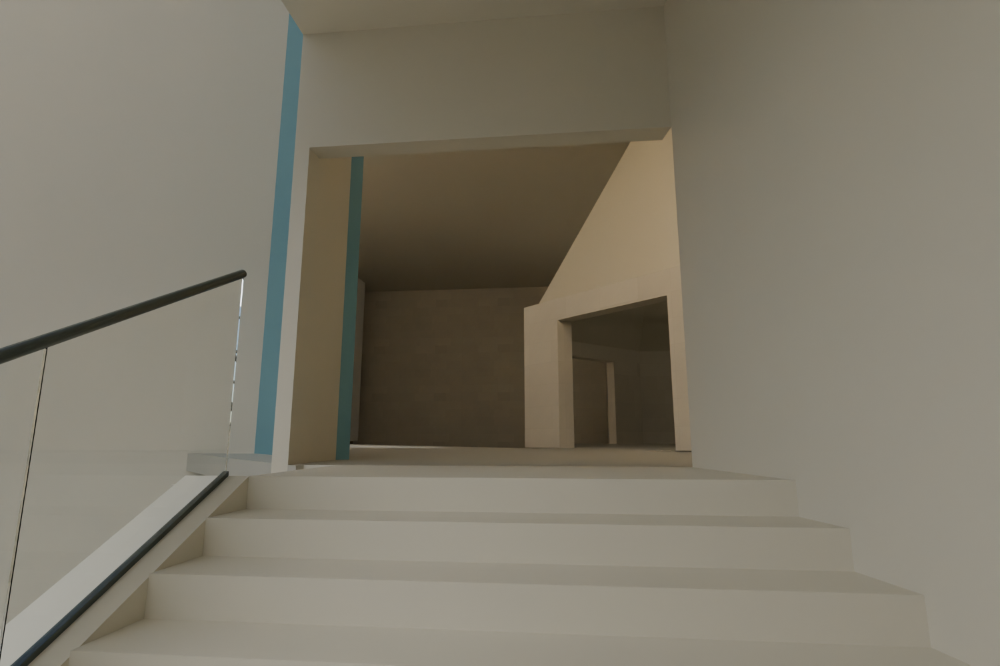
23 açık yüzey kapatıldı; altı tavan ile üst döşeme kesimi merdiven nişiyle koordine edildi. Aynı sahnede yedi dolaşım regresyonu geçti.
Görünüm kalınlıkları koşullu. Kapalı mesh, bütün bina çakışma/ölçü doğruluğu kabulü değildir.
Kaynak ve kontrol raporuMerdiven duvarında taş tutamak / R45
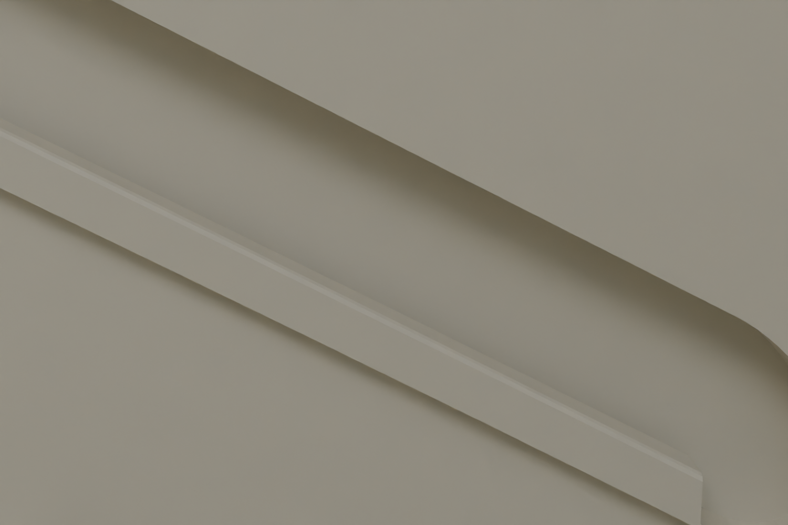
023/024 kaynaklı oyuk ve taş tutamak adayı; 64 duvar parçası aynı ön iz üzerinde sürekli kabuğa dönüştürüldü. 39 oyuk/tutamak örneği ve üst merdiven regresyonu geçti.
Kesit, boyut ve üst bitiş adaydır. Döşemenin duvar içindeki çakışması yerel kesildi; taşıyıcı imalat çözümü değildir.
Kaynak ve kontrol raporuMerdiven taş yüzeyleri / R46
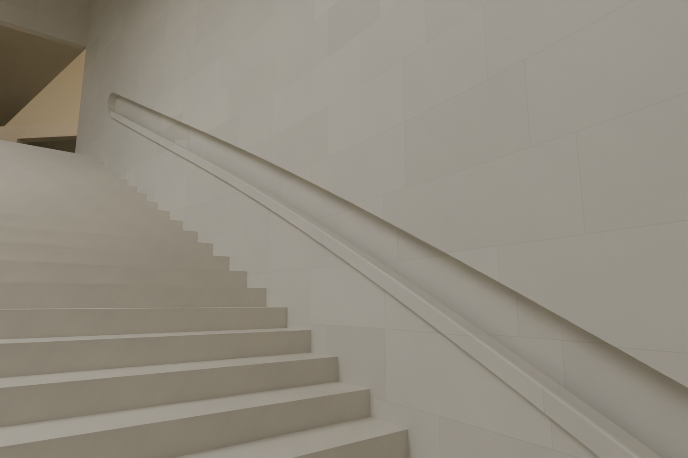
38 yüzey nesnesi: duvar boyunca sürekli UV ve derzsiz basamak taşı dokusu; değerlendirilmiş geometri birebir korundu.
Taş rengi, tane, derz modülü ve pürüzlülük aday; gerçek malzeme numunesi veya blok imalatı değildir.
Kaynak ve kontrol raporuOkuma ışıklığının dış gövdesi / R47
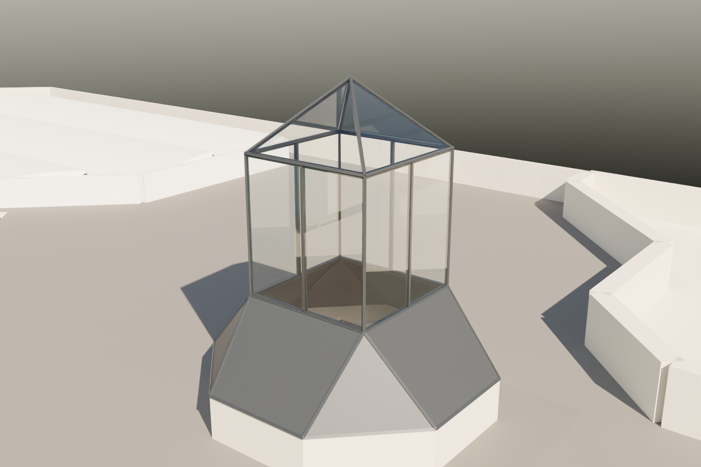
116 yakın kırpımıyla dört yüzlü cam gövde/başlık ve opak etek; 12 cam, 8 etek paneli, 52 profil. Okuma alanı ve 24 askı kontrol edildi.
Çerçeve kesiti, panel bölünmesi ve mutlak boyutlar aday. İç kare açıklık dış gövdenin ölçüsünü tek başına doğrulamaz.
Kaynak ve kontrol raporuAşağı merdiven küpeşte sürekliliği / R48
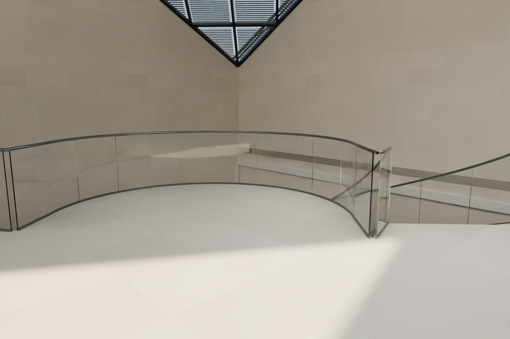
İki 45 mm model kopukluğu giderildi; altı eski ray iki sürekli gövdeye dönüştürüldü. Beş camın üst bitişi yerel düzeltildi; basamak ve dolaşım kontrolü tekrar geçti.
Bağlayıcı eğri, büküm yarıçapı ve cam bitişleri adaydır; plan izleri ve basamaklar korundu. v001 görsel kontrolde reddedildi.
Kaynak ve kontrol raporuAşağı merdiven yüzey görünümü / R49
35 mineral yüzey ve 42 metal parça kaynak fotoğraflarıyla işlendi. 2.678 UV yüzü kontrol edildi; 7.420 geometri nesnesi önceki sahneyle tam aynı.
Taş türü, alaşım, tanecik ölçeği ve renk/pürüzlülük ölçülmedi. Görünüm adayıdır; eklemeli derz veya deplasman yok.
Kaynak ve kontrol raporuGrand Hall 20 silindir armatür / R50
028 üzerinden dört beşli grup sayıldı; 114 kapalı gövde, dört metal temas noktası ve önceki geometri kontrol edildi.
Çap, yükseklik, asma kotu, askı ve bağlantı kesitleri koşullu. Gerçek armatür ürünü veya fotometrik çözüm değildir.
Kaynak ve kontrol raporuAna çatı dört yüz gölgeliği / R51
028/029 ile dört geniş yüz: 168 panel dizisi ve 3.816 kapalı lamel. Dar şeritler açık bırakıldı; panel sınırı ve cam mesafesi denetlendi.
Adım, kesit, açı ve cam mesafesi aday; gizli çalıştırma ve taşıyıcı bağlantı çözümü yok.
Kaynak ve kontrol raporuGaleri camı–plan sınırı koordinasyonu / R52
İki cam düzlemi plan sınırına taşındı; 22 parça, galeri duvarı boşluğu ve taş ayak birleşimi işlendi. Döşeme ve vestiyer korundu; yeniden açma ve dolaşım kontrolleri geçti.
İkinci pencere genişliği, kaynak kamera eşlemesi, niş ölçüleri ve montaj detayları koşullu. Önceki sekiz deneme ana sürüme alınmadı.
Kaynak ve kontrol raporuGaleri nişi malzeme sürekliliği / R53
28 nesne / 168 yüzde taş, plak eşik ve mineral tavan altı görünümü; 7.726 hesaplanan geometri nesnesi aynı kaldı.
Malzeme ailesi ve görünüm adayı; derz modülleri, renk ve mineral türü ölçülmedi. Fotoğraf veya imalat kalibrasyonu yok.
Kaynak ve kontrol raporuTarihî duvara bağlı alt pencereler / R54
Beş üstü açık tarihî duvar çentiği, 45 yeni parça; 60 açıklık/duvar kontrolü ve alt galeri regresyonu geçti.
Duvarla bina kaydı ilk iki pencere yanında açık; bütün kot ve boyutlar koşullu. 1,62 px kalıntı bağımsız ölçü doğrulaması değildir.
Kaynak ve kontrol raporuÜst kat boşluğu ve cam korkuluk
103 planındaki kare döşeme boşluğu, 015/016 fotoğraflarıyla birlikte işlendi. Çatı açıklığı bağımsız parametredir. 45 kapalı hacim ve 15 düşey ışın kontrolü geçti. Eğimli tavan ve 24 kollu aydınlatma R08, oda duvarları ve geçişleri R09 ile eklendi; kesin ölçüler ve bitişler açık.
Boşluk ve korkuluk raporu · Malzeme, kesit ve GLB kontrolleri
Paket takibi
| Paket | İş | Durum | Kontrol / açık konu |
|---|---|---|---|
| P00 | Ortam ve kaynak manifesti | Tamam | Kabul ölçütü: Kaynakların tamamı dosyaya çözülür; orijinaller korunur |
| P01 | Üst kat referans araştırması | Eksikler belgeli | UG02/UG03 üst galeri iç ışıklık biçimini destekliyor; çözünürlükleri 150x100. UC01/UC02 yapım kesit biçimini destekliyor. Kesin kanat/kamera ve panel ölçüleri açık. |
| P02 | Kesit tarihi ve izi | Sürüyor | 101 kesitinin tarihi ve plan kesit izi çözülmedi. |
| P03 | Yatay referans aktarımı | Tamam | Kabul ölçütü: İki nokta ve yön testi; atlas Y işareti doğru |
| P04 | Düşey ölçü çözümü | Sürüyor | Kotlar koşullu kesit oranından türetilmiş etüt değerleri. Ana/alt merdiven rıht ve sahanlık zinciri henüz doğrulanmadı. P02 tamamlanmadan yalnız bağımsız oran/hacim etüdü yapıldı; üretim geçişi kabul edilmedi. |
| P05 | Tüm bina sade geometrisi | Sürüyor | Üçgen giriş saçağı ve ana örtü altı revize edildi. Yan salon uç birleşimleri, cephe açıklıkları, üst galeri ışıklık sayısı ve alt kabuk sürüyor. |
| P06 | Kamera eşleştirme pilotu | Sürüyor | 087/119/116 için üç koşullu kamera. 116 karşı görünüşte kontrol RMS 10,05 px. İç kamera ve tam metrik doğrulama açık. |
| P07 | Beton duvar ve döşemeler | Sürüyor | 23 açık yüzey kapatıldı; altı tavan ile üst döşeme kesimi merdiven nişiyle koordine edildi. Aynı sahnede yedi dolaşım regresyonu geçti. Görünüm kalınlıkları koşullu. Kapalı mesh, bütün bina çakışma/ölçü doğruluğu kabulü değildir. |
| P08 | Kapı pencere ve mekân listesi | Sürüyor | İki cam düzlemi plan sınırına taşındı; 22 parça, galeri duvarı boşluğu ve taş ayak birleşimi işlendi. Döşeme ve vestiyer korundu; yeniden açma ve dolaşım kontrolleri geçti. İkinci pencere genişliği, kaynak kamera eşlemesi, niş ölçüleri ve montaj detayları koşullu. Önceki sekiz deneme ana sürüme alınmadı. |
| P09 | Merdiven ve sahanlıklar | Sürüyor | İki 45 mm model kopukluğu giderildi; altı eski ray iki sürekli gövdeye dönüştürüldü. Beş camın üst bitişi yerel düzeltildi; basamak ve dolaşım kontrolü tekrar geçti. Bağlayıcı eğri, büküm yarıçapı ve cam bitişleri adaydır; plan izleri ve basamaklar korundu. v001 görsel kontrolde reddedildi. |
| P10 | Ana cam örtü | Sürüyor | 028/029 ile dört geniş yüz: 168 panel dizisi ve 3.816 kapalı lamel. Dar şeritler açık bırakıldı; panel sınırı ve cam mesafesi denetlendi. Adım, kesit, açı ve cam mesafesi aday; gizli çalıştırma ve taşıyıcı bağlantı çözümü yok. |
| P11 | Yan salon ve pavyon örtüleri | Sürüyor | 026/033 ile metal başlık eklendi; 27 açıklık/başlık ışını ve R04 merdiven regresyonu geçti. Başlık kesiti, mutlak kot ve çatı eğimi koşullu. Net açıklık artık başlığın alt yüzünden tanımlanıyor; tam bina kabulü yok. |
| P12 | Üç örnek detay bölgesi | Sürüyor | 014 ile girişte iki sıra / dört düz cam kanat adayı. Mekanizma, ana korkuluk ve galeri penceresi örneği açık. |
| P13 | Taş yüzeyler ve derzler | Sürüyor | 28 nesne / 168 yüzde taş, plak eşik ve mineral tavan altı görünümü; 7.726 hesaplanan geometri nesnesi aynı kaldı. Malzeme ailesi ve görünüm adayı; derz modülleri, renk ve mineral türü ölçülmedi. Fotoğraf veya imalat kalibrasyonu yok. |
| P14 | Bütün kapı ve pencereler | Sürüyor | Beş üstü açık tarihî duvar çentiği, 45 yeni parça; 60 açıklık/duvar kontrolü ve alt galeri regresyonu geçti. Duvarla bina kaydı ilk iki pencere yanında açık; bütün kot ve boyutlar koşullu. 1,62 px kalıntı bağımsız ölçü doğrulaması değildir. |
| P15 | Korkuluk ve metal birleşimler | Sürüyor | Okuma boşluğu, Grand Hall üst/alt kol, doğu spiral, batı merdiven ve pavyon korkuluk adayları üretildi. Gerçek bağlantı kesitleri, cam kalınlıkları ve donanım açık. |
| P16 | Zemin ve alt kat iç bitişleri | Sürüyor | 28 nesne / 168 yüzde taş, plak eşik ve mineral tavan altı görünümü; 7.726 hesaplanan geometri nesnesi aynı kaldı. Malzeme ailesi ve görünüm adayı; derz modülleri, renk ve mineral türü ölçülmedi. Fotoğraf veya imalat kalibrasyonu yok. |
| P17 | Üst kat iç bitişleri | Sürüyor | Okuma odası/tavanı/24 kollu armatür; iki üst galeri, ışıklıkları, Studio ve asansör sahanlığı üretildi. Fotoğraf kimlikleri, kesin ölçüler ve sabit donanım eksikleri açık. |
| P18 | Arazi tarihî duvar ve peyzaj | Sürüyor | Beş üstü açık tarihî duvar çentiği, 45 yeni parça; 60 açıklık/duvar kontrolü ve alt galeri regresyonu geçti. Duvarla bina kaydı ilk iki pencere yanında açık; bütün kot ve boyutlar koşullu. 1,62 px kalıntı bağımsız ölçü doğrulaması değildir. |
| P19 | Malzeme ve ışık | Sürüyor | Şeffaf cam, koyu profiller, taş/ahşap UV adayları ve genel gündüz önizlemesi mevcut. Renk ve fiziksel ışık kalibrasyonu açık. |
| P20 | Kat ayırma ve kesit | Sürüyor | Üç kat kot aralığı, yatay/düşey canlı kesit, parça-kaynak seçimi ve tek parça görünümü mevcut. Kesit yüzleri kapaksız; kat kotları koşullu; bina kabulü yapılmadı. |
| P21 | Hafif türev ve dışa aktarma | Sürüyor | 7117 mesh / 851636 üçgen GLB aktarımı denetlendi; hedef motor ve sadeleştirme açık. |
| P22 | Teslim doğrulaması | Açık | Kabul ölçütü: Temiz oturumda açılır; kapsam ve belirsizlikler denetlenmiş |
Kaynak ve ölçüm kontrolleri
Giriş mesh ve geçiş denetimi · Merdiven yeniden açma denetimi · Açıklık listesi · Ölçü ve kaynak kayıtları
8 Ekim 2026. Kamera izdüşümü ile yazılım aktarımı denetlenir; bu, ölçülmüş bina doğruluğu anlamına gelmez. Eski sürümler korunur.